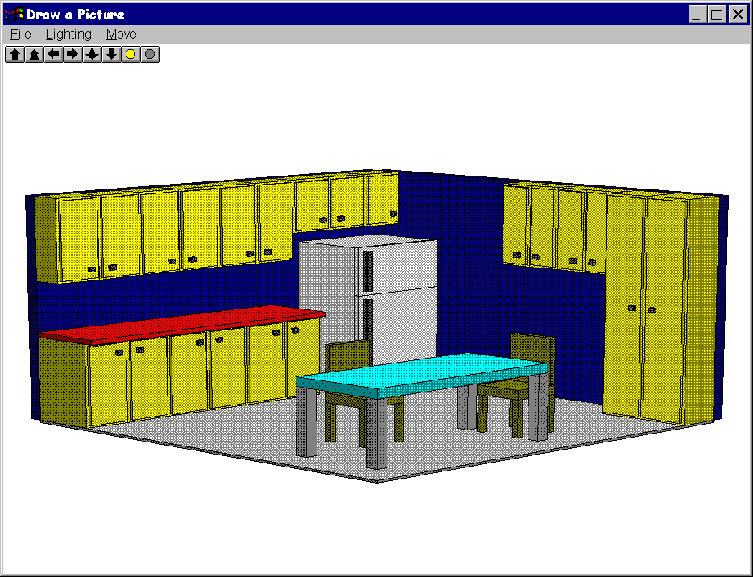
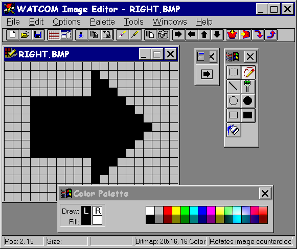

Index of Topics
- - A -
- Accessing On-line Documentation
Adding Multiple Targets
- B -
- Benchmarking Hints
- C -
- C Programmers
C++ Programmers
Changes in 1.4 that may Require Recompilation
Changes in 1.7 that may Require Recompilation
Changes in 1.8 that may Require Recompilation
Changes in 10.0 that may Require Recompilation
Changes in 10.5 that may Require Recompilation
Changes in 10.6 that may Require Recompilation
Changes in 11.0 that may Require Recompilation
Changes in Blue Sky's Visual Programmer for 11.0
Changes in Microsoft Foundation Classes Support for 10.6
Changes in Microsoft Foundation Classes Support for 11.0
Changes in Microsoft Win32 SDK Support for 11.0
Changes that may Require Recompilation
Changes to the C Compiler for 11.0
Changes to the C Compiler in 10.6
Changes to the C Library in 10.6
Changes to the C++ Compiler for 11.0
Changes to the C++ Compiler in 10.6
Changes to the C/C++ Libraries for 11.0
Changes to the Code Generator for 11.0
Changes to the Compiler Tools for 11.0
Changes to the Dialog Editor in 10.6
Changes to the DOS Graphics Library for 11.0
Changes to the Image Editor in 10.6
Changes to the Resource Compiler in 10.6
Changes to the Resource Editor in 10.6
Command Line Options added to Watcom C8.0 /386
Command Line Options added to Watcom C8.5 /386
Command Line Options added to Watcom C9.0 /386
Contacting Technical Support
Correcting an Error
- D -
- Debugging the Program
Defining a Project
Differences from Open Watcom Version 1.0
Differences from Open Watcom Version 1.1
Differences from Open Watcom Version 1.2
Differences from Open Watcom Version 1.3
Differences from Open Watcom Version 1.4
Differences from Open Watcom Version 1.5
Differences from Open Watcom Version 1.6
Differences from Open Watcom Version 1.7
Differences from Open Watcom version 1.8
Differences from Version 11.0
Documentation
DOS Developers
- E -
- Editing a Bitmap
Editing Menus
Executing the Program
Extended DOS Developers
- H -
- Hands-on Introduction to Open Watcom C/C++
Hardware and Software Requirements
- I -
- Incremental Installation
Information Technical Support Will Need to Help You
Installation
Installation Notes for OS/2
Installation Notes for Windows 3.x
Installing Open Watcom C/C++
Introduction to Open Watcom C/C++
Items No Longer Supported
- M -
- Major Differences from Version 10.0
Major Differences from Version 10.0 LA
Major Differences from Version 10.5
Major Differences from Version 10.6
Major Differences from Watcom C7.0 /386
Major Differences from Watcom C8.0 /386
Major Differences from Watcom C8.5 /386
Major Differences from Watcom C9.0 /386
Major Differences from Watcom C9.01 /386
Major Differences from Watcom C9.5 /386
Making a Target
Making All Targets
- O -
- On-line Documentation under DOS
On-line Documentation under OS/2
On-line Documentation under Windows
The Open Watcom C/C++ Tutorial
OS/2 Developers
Outline
- P -
- Protected-mode Compiler and Linker
- R -
- The README File
Release Notes for Open Watcom C/C++ 1.9
Resources at Your Fingertips
- S -
- Sampling and Profiling an Executable
Saving the Project and Terminating the Session
Smart Editing
Suggested Reading
Sybase Open Watcom Public License
System Configuration File Modifications
- T -
- Technical Support and Services
Trouble-Shooting
Tutorial Review
- U -
- Using the Source Browser
- V -
- Virtual Device Driver Developers
- W -
- What is in version 1.9 of Open Watcom C/C++?
Win-OS/2 and OS/2 Specific
Windows 3.x Developers
Windows 95 Help File Format
Windows NT Developers
Introduction to Open Watcom C/C++
Welcome to the Open Watcom C/C++ 1.9 development system. Open Watcom C/C++ is an Open Source successor to commercial
compilers previously marketed by Sybase, Powersoft and originally WATCOM International Corp.
Version 1.9 of Open Watcom C/C++ is a professional, optimizing, multi-platform C and C++ compiler with a comprehensive
suite of development tools for developing and debugging both 16-bit and 32-bit applications for DOS, extended DOS, Novell
NLMs, 16-bit OS/2, 32-bit OS/2, Windows 3.x, Windows 95/98/Me, Win32s, and Windows NT/2000/XP (Win32).
You should read the entire contents of this booklet, as it contains information on new programs and modifications
that have been made since the previous release.
Special NOTE to users of previous versions! See the section entitled Release Notes for Open Watcom C/C++ 1.9
to determine if you need to recompile your application.
What is in version 1.9 of Open Watcom C/C++?
Version 1.9 incorporates the features professional developers have been demanding:
- Open, Multi-target Integrated Development Environment
- The IDE allows you to easily edit, compile, link, debug and build applications for 16-bit systems like DOS, OS/2 1.x, and
Windows 3.x and 32-bit systems like extended DOS, Novell NLMs, OS/2, Windows 3.x (Win32s), Windows 95/98/Me, and Windows
NT/2000/XP. Projects can be made up of multiple targets which permit a project to include EXEs and DLLs. The
IDE produces makefiles for the project which can be viewed and edited with a text editor. The IDE is hosted under Windows
3.x, Windows 95/98/Me, Windows NT/2000/XP, and 32-bit OS/2.
The Widest Range of Intel x86 Platforms
-
- Host Platforms
-
- DOS (command line)
- 32-bit OS/2 (IDE and command line)
- Windows 3.x (IDE)
- Windows 95/98/Me (IDE and command line)
- Windows NT/2000/XP (IDE and command line)
16-bit Target Platforms
-
32-bit Target Platforms
-
- Extended DOS
- Win32s
- Windows 95/98/Me
- Windows NT/2000/XP
- 32-bit OS/2
- Novell NLMs
Cross-Platform Development Tools
- The core tools in the package permit cross-platform development that allows developers to exploit the advanced features of
today's popular 32-bit operating systems, including Windows 95/98/Me, Windows NT/2000/XP, and OS/2. Cross-platform
support allows you to develop on a host development environment for execution on a different target system.
Multi-Platform Debugger
- The new debugger advances developer productivity. New features include redesigned interface, ability to set breakpoints
on nested function calls, improved C++ and DLL debugging, reverse execution, and configurable interface. Graphical
versions of the debugger are available under Windows 3.x, Windows 95/98/Me, Windows NT/2000/XP, and 32-bit OS/2. Character
versions of the debugger are available under DOS, Windows 3.x, Windows NT/2000/XP, and 32-bit OS/2. For VIDEO fans,
we have kept the command line compatibility from the original debugger.
Class Browser
- The Browser lets you visually navigate the object hierarchies, functions, variable types, and constants of your C/C++ application.
Performance Analysis
- The Open Watcom Execution Sampler and Open Watcom Execution Profiler are performance analysis tools that locate heavily used
sections of code so that you may focus your efforts on these areas and improve your application's performance.
Editor
- The Open Watcom Editor is a context sensitive source editor, integrated into the Windows 3.x, Windows 95/98/Me and Windows
NT/2000/XP version of the IDE.
Graphical Development Tools
- Open Watcom C/C++ includes a suite of graphical development tools to aid development of Windows 3.x, Windows 95/98/Me and
Windows NT/2000/XP applications. The development tools include:
- Resource Editors
- Enable you to create resources for your 16-bit and 32-bit Windows applications. For 32-bit OS/2 PM development, Open
Watcom C/C++ interoperates with IBM's OS/2 Developer's Toolkit (available from IBM). These tools have been seamlessly
integrated into the IDE. The resource compiler allows you to incorporate these resources into your application.
Resource Compiler
- Produces a compiled resource file from a source file.
Zoom
- Magnifies selected sections of your screen.
Heap Walker
- Displays memory usage for testing and debugging purposes.
Spy
- Monitors messages passed between your application and Windows.
DDESpy
- Monitors all DDE activity occurring in the system.
Dr. Watcom
- Enables you to debug your program by examining both the program and the system after an exception occurs; monitors native
applications running under Windows 3.x, Windows 95/98/Me or Windows NT/2000/XP.
Assembler
- An assembler is included in the package. It is compatible with a subset of the Microsoft macro assembler (MASM).
C++ Class Libraries
- Open Watcom C/C++ includes container and stream class libraries.
Royalty-free 32-bit DOS Extender
- Open Watcom C/C++ includes the DOS/4GW 32-bit DOS extender by Tenberry Software with royalty-free run-time and virtual memory
support up to 32MB.
Support for wide range of DOS Extenders
- Open Watcom C/C++ allows you to develop and debug applications based on the following DOS extender technology: CauseWay
DOS Extender, Tenberry Software's DOS/4G and Phar Lap's TNT DOS Extender. You can also develop applications using DOS/32A
and FlashTek's DOS Extender but, currently, there is no support for debugging these applications.
Sample programs and applications
- Open Watcom C/C++ includes a large set of sample applications to demonstrate the integrated development environment.
Technical Support and Services
We are committed to ensuring that our products perform as they were designed. Although a significant amount of testing
has gone into this product, you may encounter errors in the software or documentation. Technical support is provided
on an informal basis through the Open Watcom C/C++ newsgroups. Please visit http://www.openwatcom.org/ for more information.
Resources at Your Fingertips
Open Watcom C/C++ contains many resources to help you find answers to your questions. The documentation is the first
place to start. With each release of the product, we update the manuals to answer the most frequently asked questions.
Most of this information is also accessible through on-line help.
The "README" file in the main product directory contains up-to-date information that recently became available.
Answers to frequently asked questions are available on the Open Watcom World Wide Web server (http://www.openwatcom.org/).
Our technical support is available to help resolve technical defects in the software. Note that all support is currently
informal and free. The following are ways to contact technical support.
- Newsgroups
- The easiest way to get support is through the Open Watcom newsgroups at news://news.openwatcom.org/.
World Wide Web
- You can also submit bug reports or enhancement requests through the Open Watcom bug tracking system at http://bugzilla.openwatcom.org/.
The more information you can provide to technical support, the faster they can help you solve your problem. A detailed
description of the problem, short sample program, and a summary of steps to duplicate the problem (including compiler and
linker options) are essential. Concise problem reports allow technical support to quickly pinpoint the problem and
offer a resolution. Here is a list of information that will help technical support solve the problem:
- Contact information
- We would like your name, as well as telephone and fax numbers where you can be reached during the day.
Product information
- Please tell us the product name and exact version number.
Hardware configuration
- Please tell us what type of processor you are using (e.g., 2.2GHz Intel Pentium 4), how much memory is present, what kind
of graphics adapter you are using, and how much memory it has.
Software configuration
- Please tell us what operating system and version you are using.
Concise problem report with short sample program
- Please provide a complete description of the problem and the steps to reproduce it. A small, self-contained program
example with compile and link options is ideal.
Suggested Reading
There are a number of good books and references that can help you answer your questions. Following is a list of
some of the books and documents we feel might be helpful. This is by no means an exhaustive list. Contact your
local bookstore for additional information.
C Programmers
- The C Programming Language, 2nd Edition
-
Brian W. Kernighan and Dennis M.Ritchie; Prentice Hall, 1988.
C DiskTutor
-
L. John Ribar; Osborne McGraw-Hill, 1992.
C++ Programmers
- C++ Primer, 2nd Edition
-
Stanley B. Lippman; Addison-Wesley Publishing Company, 1991.
Teach Yourself C++ in 21 Days
-
Jesse Liberty; Sams Publishing, 1994.
DOS Developers
- PC Interrupts, Second Edition
-
Ralf Brown and Jim Kyle; Addison-Wesley Publishing Company, 1994.
Relocatable Object Module Format Specification, V1.1
-
The Tool Interface Standards (TIS) OMF specification can be obtained from the Open Watcom website. Here is the URL.
http://www.openwatcom.org/ftp/devel/docs/omf.pdf
This file contains a PDF version of the TIS OMF V1.1 specification.
Extended DOS Developers
- Extending DOS-A Programmer's Guide to Protected-Mode DOS, 2nd Edition
-
Ray Duncan, et al; Addison-Wesley Publishing Company, 1992.
DOS Protected-Mode Interface (DPMI) Specification
-
The DPMI 1.0 specification can be obtained from the Open Watcom website. Here is the URL.
http://www.openwatcom.org/ftp/devel/docs/dpmi10.pdf
This file contains a PDF version of the DPMI 1.0 specification.
Windows 3.x Developers
- Microsoft Windows Programmer's Reference
-
Microsoft Corporation; Microsoft Press, 1990.
Programming Windows 3.1, Third Edition
-
Charles Petzold; Microsoft Press, 1992.
Windows Programming Primer Plus
-
Jim Conger; Waite Group Press, 1992.
Windows NT Developers
- Advanced Windows NT
-
Jeffrey Richter; Microsoft Press. 1994.
Inside Windows NT
-
Helen Custer; Microsoft Press. 1993.
Microsoft Win32 Programmer's Reference, Volume One
-
Microsoft Corporation; Microsoft Press, 1993.
OS/2 Developers
- The Design of OS/2
-
H.M. Deitel and M.S. Kogan; Addison-Wesley Publishing Company, 1992.
OS/2 Warp Unleashed, Deluxe Edition
-
David Moskowitz and David Kerr, et al; Sams Publishing, 1995.
Virtual Device Driver Developers
- Writing Windows Virtual Device Drivers
-
David Thielen and Bryan Woodruff; Addison-Wesley Publishing Company, 1994.
Installation
The package contains the following components:
- Open Watcom C/C++ CD-ROM
- This manual
Hardware and Software Requirements
Open Watcom C/C++ requires the following minimum configuration:
- IBM PC compatible
- An 80386 or higher processor
- 8 MB of memory
- Hard disk with enough space available to install the components you require.
- A CD-ROM disk drive
In addition to the above requirements, you need one of the following operating systems:
- DOS version 5.0 or higher
- Microsoft Windows version 3.1 running in enhanced mode
- Microsoft Windows 95 or higher
- Microsoft Windows NT version 3.1 or higher
- IBM OS/2 2.1 or higher
The README File
Before you install Open Watcom C/C++, you should read the contents of the "README" file which is stored in the
root directory of the CD-ROM. It contains valuable, up-to-date information concerning this product.
Installing Open Watcom C/C++
The installation program in this version has been completely redesigned with several new "smart" features.
If you have installed a previous version of Open Watcom C/C++ then you should install Open Watcom C/C++ 1.9 into the same
path (except for the reason described in the following paragraph). It will examine a previous installation to determine
what features were previously installed. It will use this information to establish default settings for the installation
that you are about to attempt. Of course, you can add or remove features as you progress through the installation steps.
If you are installing only one of the Open Watcom C/C++ or Open Watcom FORTRAN 77 products and you have an older version
of the other product, we do NOT recommend that you install the new product into the same directory as the old product.
The Open Watcom C/C++ and Open Watcom FORTRAN 77 products are compatible at the same version number. However, the Open
Watcom C/C++ and Open Watcom FORTRAN 77 products are usually NOT compatible across different version numbers. If this
is the case, care must be exercised when switching between use of the two products. Environment variables such as
PATH and WATCOM must be modified and/or corrected. System files such as CONFIG.SYS and SYSTEM.INI
must be modified and/or corrected.
If you are installing both Open Watcom C/C++ 1.9 and Open Watcom FORTRAN 77 1.9, we recommend that you install both
products under the same directory. This will eliminate duplication of files and, as a result, reduce the total required
disk space. The two products share the use of certain environment variables which point to the installation directory.
If separate installation directories are used, problems will arise.
When you install Open Watcom C/C++ and Open Watcom FORTRAN 77 in the same directory, you should not deselect any options
when running the second installation; otherwise the second product's install may remove files that were installed (and are
required) by the first product's install. This isn't an issue if you only have one of Open Watcom C/C++ or Open Watcom
FORTRAN 77. The problem is that Open Watcom C/C++ and Open Watcom FORTRAN 77 don't know about the installation options
you have selected for each other's product.
If you wish to create a backup of your previous version, please do so before installing Open Watcom C/C++ 1.9.
If you decide to install Open Watcom C/C++ 1.9 into a different directory than the previously installed version, you
will have to manually edit system files (e.g., CONFIG.SYS, AUTOEXEC.BAT, SYSTEM.INI) after the installation process is complete
to remove the old version from various environment variables (e.g., PATH, DEVICE=). This is necessary since the path
to the new version will appear after the path to the old version. To avoid this extra work, we recommend installing
the new version into the same path as the old version.
As an example, here are a few of the environment variables and "RUN" directives that are modified/added
to the OS/2 CONFIG.SYS file. You should make sure that all references to the older version of the software
are removed.
Example:
LIBPATH=...;D:\WATCOM\BINP\DLL;...
SET PATH=...;D:\WATCOM\BINP;D:\WATCOM\BINW;...
SET HELP=...;D:\WATCOM\BINP\HELP;...
SET BOOKSHELF=...;D:\WATCOM\BINP\HELP;...
SET INCLUDE=...;D:\WATCOM\H\OS2;D:\WATCOM\H;
SET WATCOM=D:\WATCOM
SET EDPATH=D:\WATCOM\EDDAT
RUN=D:\WATCOM\BINP\NMPBIND.EXE
You may wish to run Open Watcom C/C++ under more than one operating system on the same personal computer. For
every operating system that you use, simply start up the operating system and run the corresponding install procedure.
If you run the Windows 3.x installation procedure, you do not need to run the DOS installation procedure also.
If you plan to use Win-OS/2 as a development platform under OS/2, you must run the Windows 3.1 install program (selecting
Windows 3.1 host support).
Place the CD-ROM disk in your CD-ROM drive. Select one of the following procedures depending on the host operating
system that you are currently running. Below, substitute the CD-ROM drive specification for "x:".
- DOS
- Enter the following command:
x:\setup
Windows 3.x
- Start Windows 3.x and choose Run from the File menu of the Program Manager. Enter the following command:
x:\setup
Windows 95/98/Me
- Choose Run from the Start menu and enter the following command:
x:\setup
Windows NT/2000/XP
- Log on to an account that is a member of the "Administrator" group so that you have sufficient rights to modify
the system environment. Choose Run from the File menu of the Program Manager. Enter the following command:
x:\setup
OS/2
- Start an OS/2 session and enter the following command:
x:\install
Incremental Installation
You may wish to install Open Watcom C/C++, and subsequently install features that you omitted in the first install.
You can also remove features that you no longer wish to have installed. You can achieve this as follows:
- Start the installation program.
- Select any new features that you wish to install.
- Deselect any features that you wish to remove.
- Re-run the installation program for each host operating system that you use.
System Configuration File Modifications
The install program makes changes to your operating system startup files to allow Open Watcom C/C++ to run. We strongly
recommend that you allow the install program to modify your system configuration files for you, but you may do it by hand.
The changes required may be found in any of the following files which have been placed in the root of the installation
directory:
- CONFIG.NEW
- Changes required for CONFIG.SYS (DOS, Windows, Windows 95/98/Me, OS/2)
AUTOEXEC.NEW
- Changes required for AUTOEXEC.BAT (DOS, Windows, Windows 95/98/Me, OS/2)
CHANGES.ENV
- Changes required for the Windows NT/2000/XP environment
Installation Notes for Windows 3.x
- When you use the Integrated Development Environment under Windows 3.x, it is important that the IDE's batch server program
be able to run in the background. Therefore, make sure that the "Exclusive in Foreground" checkbox is NOT
checked in the "Scheduling" options of "386 Enhanced" in the "Control Panel".
- When you use the Integrated Development Environment under Windows 3.x, the line
OverlappedIO=ON
in your "SYSTEM.INI" file can cause problems. This controls (disables) the queuing of DiskIO and makes
some changes between DOS box timings to allow some processes to finish.
- When you use the Integrated Development Environment under Windows 3.x, it is important that the line
NoEMMDriver=ON
not appear in your "SYSTEM.INI" file. It will prevent a link from succeeding in the IDE..
- When you use the Integrated Development Environment under Windows 3.x on the NEC PC-9800 series, it is important that
the line
InDOSPolling=TRUE
not appear in your "SYSTEM.INI" file. It will prevent a make from succeeding in the IDE.
- Central Point Software's anti-virus programs (VDEFEND, VSAFE, VWATCH) conflict with the Integrated Development Environment
under Windows 3.x.
- The Program Information File "BATCHBOX.PIF" is used by the Integrated Development Environment (IDE) to start
up a background batch server for compiling, linking, etc. The PIF references "COMMAND.COM". If you
are using a substitute for "COMMAND.COM" such as "4DOS.COM" then you must modify the PIF accordingly
using a PIF editor.
Installation Notes for OS/2
- The Integrated Development Environment (IDE) uses the IBM OS/2 Enhanced System Editor (EPM) for editing text files.
You must ensure that EPM is installed in your OS/2 system if you are planning to use the IDE. You can selectively install
the Enhanced Editor by running the OS/2 Setup and Installation program (Selective Install) and choosing "Enhanced Editor"
from the "Tools and Games" detail page.
- On some systems with limited memory that use the UNDELETE feature of OS/2, compile times may be slow because OS/2 is saving
copies of compiler temporary files. You may start the BATSERV process using the OS/2 STARTUP.CMD file with
DELDIR turned off as illustrated below.
SET OLD_DEL_DIR=%DELDIR%
SET DELDIR=
DETACH C:\WATCOM\BINP\BATSERV.EXE
SET DELDIR=%OLD_DEL_DIR%
SET OLD_DEL_DIR=
- If you plan to use the Named Pipe Remote Debugging support of the Open Watcom Debugger then the NMPSERV.EXE.
program must be running. It may be started during OS/2 initialization via a "RUN=" statement in your
CONFIG.SYS file or manually as needed through the DETACH command.
Hands-on Introduction to Open Watcom C/C++
Let's get started and introduce some of the tools that are in Open Watcom C/C++. The purpose of this chapter is
to briefly test out the new graphical tools in Open Watcom C/C++ using an existing application.
In this tutorial, we will take an existing set of C++ source files, create a project in our integrated development
environment, and perform the following tasks:
- Add multiple targets
- Make a target
- Make all targets
- Execute the program
- Debug the program
- Use the Browser
- Correct errors
- Sample and profile the executable
- Save the project
- Terminate the session
Outline
Open Watcom's Integrated Development Environment (IDE) manages the files and tools that a programmer uses when developing
a project. This includes all the source files, include files, libraries, compiler(s), linkers, preprocessors, etc.
that one uses.
The IDE has a graphical interface that makes it easy to visualize the make-up of a project. A single IDE session
shows a project. If the project consists of a number of components, such as two executables and one library, these
are each shown as target windows in the project window. Each target window shows the files that are needed to construct
the target and is associated via its filename extension with a rule that describes the construction mechanism. For
example, a filename with the extension ".EXE" may be associated with the rule for constructing 32-bit Windows executables,
or a filename with the extension ".LIB" may be associated with the rule for constructing static libraries.
Different projects can refer to the same target. If they do, the target is shared and can be manipulated via either
project, with changes made through one affecting the other.
The IDE itself is a collection of programs that manages the various files and tools used to create the target libraries
and executables. It creates makefile(s) from the information in the target descriptions and invokes Open Watcom Make
to construct the targets themselves. A configuration file contains built-in knowledge of the Open Watcom compilers,
editors, Profiler, and Browser, as well as all their switches.
The Open Watcom C/C++ Tutorial
This tutorial walks you through the creation and execution of a C/C++ program under Windows. This will give you
an understanding of the basic concepts of the IDE and its components, and it will detail the steps involved in project development.
The result of this tutorial is a three dimensional drawing of a kitchen which you can manipulate using either the menus
or the icons on the toolbar. You can rotate and resize the drawing, as well as adjust the lighting and contrast.
To begin, start the IDE. This is done by double-clicking on the "IDE" icon in the Open Watcom C/C++
window.
A status field at the bottom of the IDE window indicates the function of the icon on the toolbar over which your mouse
cursor is currently positioned. If the status area does not show you the function of the icons as you move the mouse
cursor over them, check that no item in the menu bar is highlighted (if one is highlighted, press the Alt key).

Figure 1. The initial IDE screen
Defining a Project
In this tutorial, you will be creating a new project called KITCHEN. Here are the steps required to accomplish
this task.
- Define a new project by pulling down the File menu and selecting the New Project... item. You
can also define a new project by clicking on the "Create a new project" icon on the toolbar.
- A choice of different sample project directories is available. Assuming that you installed the Open Watcom C/C++
software in the \WATCOM directory, you will find the sample project directories in the following directory:
\WATCOM\SAMPLES\IDE
For purposes of this tutorial, we recommend that you select one of the following project directories:
- WIN
- for an example of 16-bit Windows 3.x application development when using Windows 3.x under DOS as a host development system,
WIN386
- for an example of 32-bit Windows 3.x application development when using Windows 3.x under DOS as a host development system,
WIN32
- for an example of 32-bit Win32 application development when using Windows NT/2000/XP or Windows 95/98/Me as a host development
system, and
OS2
- for an example of 32-bit OS/2 application development when using 32-bit OS/2 as a host development system.
Thus the target that we refer to below should be one of WIN, WIN386, WIN32, or OS2 depending
on your selection. The tutorial uses the WIN32 example for illustrative purposes. You will find some
minor variations from your selected target environment.
When asked for a project name, you can do one of two things:
- enter the following pathname:
d:[path]\SAMPLES\IDE\target\KITCHEN
where d:[path] is the drive and path where you installed the Open Watcom software, or
- use the file browser to select the following directory:
d:[path]\SAMPLES\IDE\target
and specify the filename kitchen.
Figure 2. Creating a new project
Press the Enter key or click on OK (OPEN).
The project description will be stored in this file and the IDE will set the current working directory to the specified
path during your session.
- You will be prompted for a target name. Since we will be attaching pre-defined targets, just click the Browse
button when prompted for the target name. Select the "draw" target file (it will be one of draw16.tgt,
draw.tgt, draw32.tgt, drawos2.tgt depending on your selection of target).
Figure 3. Attaching existing targets
Press the Enter key or click on OK (OPEN).
- You can ignore the settings displayed for Target Environment and Image Type since the target definition
already exists (we created it for you). The settings are important when you are defining a new target (i.e., one that
was not predefined).

Figure 4. Selecting a target type
Press the Enter key or click on OK.
A target window is created in the project window for the "draw" target. This window contains all of the
files associated with the target. You can click on any of the "Folder" icons to hide or un-hide all files
with a particular extension. For example, you may wish to un-hide all the files with a .bmp extension by clicking
on the folder icon associated with bitmap files.
Adding Multiple Targets
Open Watcom's IDE allows you to have multiple targets in any particular project. Note that targets can be used by
multiple projects. To add a new target to the project, do the following.
- Pull down the Targets menu and select the New Target... item.
- Enter button.tgt as the target name for the new target to be added to the project. Do not forget to include
the .tgt extension. It is required when selecting a pre-existing target.
- You can ignore the settings displayed for Target Environment and Image Type since the target definition
already exists (we created it for you). The settings are important when you are defining a new target (i.e., one that
was not predefined).
- Press the Enter key or click on OK.
A target window is created in the project window for the button target.
Making a Target
Open Watcom's IDE will automatically generate the sequence of steps required to build or "make" each of the
targets in a project. Note that the targets in a project can be made individually or collectively. To make the
button.lib target, do the following.
- Click on the window of the target you wish to make. In this case, click on the button.lib target window.
- Pull down the Targets menu and select the Make item (you can also do this by clicking on the "Make
the current target" icon on the toolbar, or by right-clicking on the target and selecting the Make item from
the pop-up menu).
The IDE will now construct a makefile based on its knowledge of the target and construction rules, and then invoke the
make utility to create the target, in this case button.lib. The output of this procedure is displayed in the
Log window.
Making All Targets
Click the "Make all targets in the project" icon on the toolbar to make all of the targets in the current project.
If one target depends on another target, the latter target will be made first. In this tutorial button.lib
will be made first (there will be nothing to do since it was made previously) and then draw???.exe, since button.lib
is in the list of files associated with draw???.exe. In each case, the IDE constructs makefiles based on its
knowledge of the target and construction rules. The output of this procedure is displayed in the Log window.
Figure 5. Making one or more targets
Executing the Program
The project should have built without errors, so now you are ready to execute the program you have developed.
Click on the draw???.exe target window and simply click on the "Run the current target" icon on
the toolbar. You can also do this by selecting Run from the Targets menu, or right-clicking anywhere
on the target window outside of the inner frame and selecting Run from the pop-up menu (right-clicking is context
sensitive and the pop-up menu that results will vary depending on the area of the window in which you right-click).

Figure 6. The kitchen demo
The demo you have created is a simple three dimensional drawing of a kitchen. By using either the icons on the
toolbar or the menus you can rotate the picture left, right, up, and down, make the picture brighter or dimmer, move the
picture closer or farther away, and increase or decrease the amount of contrast (this latter feature is found in the "Lighting"
menu). Choose Exit from the File menu to exit the demo program when you are finished.
Smart Editing
The IDE recognizes the type of file you wish to edit, and invokes the appropriate editor for the task. To edit a
file, you either double-click on it or select it and click the "Edit" icon on the toolbar. Files with a
.c, .cpp, .h, .hpp, .for, .asm or .rc extension are edited with a text editor; files with a .bmp, .ico,
or .cur extension are edited with the Image Editor; files with a .dlg or .res extension are edited
with the Resource Editor.
Figure 7. The Open Watcom Editor for Windows
Now we will edit one of the source files and introduce an error into the application.
- Double-click on the "draw" source file (i.e., draw???.c) to load the source file into the editor.
- Scroll down to line 227 using the keyboard or mouse. You can also pull down the Edit menu, select Goto
Line..., and enter 227. The Open Watcom Editor makes full use of colors and fonts to achieve syntax highlighting.
File templates for C, C++, and FORTRAN files are defined to assist you in distinguishing the components of your code.
- Pull down the Options menu and select the Colors item.
- Click on a color from the palette, drag it to the word if on line 218, and release it. All keywords are
now displayed in the chosen color. Drag a different color to a comment line (line 225) and all comments will display
in that color. Similarly, you can select the Fonts item from the Options menu, select a font style and size, and drag
it to your source file. Close the Fonts and Colors dialog by double-clicking in the upper left hand corner.
- You can now save this color and font configuration for all .cpp files by pulling down the Options menu,
selecting the General..., item and clicking next to Save configuration on exit in the "Features"
box. Press Enter or click on OK.
- Now, to introduce an error into the application, replace the line #if 0 with #if 1.
- Save your changes by clicking on the "Write the current file to disk" icon or select Save from the
File menu.
- Return to the IDE (by clicking on it if it is visible on your screen, or by using Alt-Tab), re-make your project, and
run it. A fault occurs in your application, so the next step is to track down the problem using the Open Watcom Debugger.
Debugging the Program
To debug a program it must first be compiled to include debugging information. The IDE maintains two sets of switches
for each target in a project. These are known as the Development Switches and the Release Switches.
- Right click on draw???.c and select Source options from the pop-up menu. Select C Compiler Switches
from the sub-menu.
By default, your target is placed in development mode with the debugging switches for the compiler and linker set
to include debugging information. You can either set the switches in each category manually or you can copy the default
Release switches using the CopyRel button. This method of setting switches is especially convenient since you can specify
everything from diagnostic, optimization, and code generation switches to special linker switches all without having to memorize
a cryptic switch name - you simply click next to the switches you wish to use for a particular item.
- Scroll through the categories using the >> button until you get to:
6. Debugging Switches
We can see that full debugging information was used in the compile, so just click on Cancel to exit this screen.
Figure 8. Setting compiler switches
- To invoke the debugger, pull down the Targets menu and choose the Debug item or select the "Debug the
current target" icon from the toolbar.
The Open Watcom Debugger is designed to be as convenient and intuitive as possible, while at the same time providing a
comprehensive and flexible environment for serious debugging. You can configure your environment to display exactly
the information you require to be most productive. Among the windows available are source and assembly, modules, functions,
calls, threads, images, watches, locals, globals, file variables, registers, 80x87 FPU, stack, I/O ports, memory display,
and a log window. You can step through your source using the keys or icons on the toolbar. Execute one line at
a time by stepping over calls or stepping into calls, or execute until the current function returns. Right-mouse button
functionality gives context-sensitive pop-up menus.
Figure 9. The Open Watcom Debugger
We know that a fault has occurred in draw???.exe, so we will run the application and examine the state of
the program when the fault occurs.
- Click on the "go!" icon on the toolbar to begin execution of the program. The exception occurs and the
source window shows the line
*pwidth = bitmap.bmWidth + 5;
in the function button_size as the last line executed before the exception. Examining the Locals window
you will see that pwidth is a NULL pointer, hence the exception.
- We can now move up the call stack by clicking on the "Move up the call stack" icon on the toolbar (red up arrow)
to follow the program's execution. On the previous line, we see button_size is called from add_button.
Moving up the call stack again, we see add_button is called with NULL as its fifth parameter. An artificial
error has been introduced for the purposes of this tutorial. It is located several lines back in the source file.
- By replacing the line #if 1 with #if 0 we can bypass this error. Right-click on the line #if
1 and select Show, then Line... from the pop-up menus to see the line number which must be corrected, then exit
the debugger.
- Double-click on draw???.c to load the source file into the editor.
- Scroll down to line 227 using the keyboard or mouse, or pull down the Edit menu, select Goto Line..., and
enter 227.
- Replace the line #if 1 with #if 0 and save your changes by clicking on the "Write the current file
to disk" icon or selecting Save from the File menu.
- Return to the IDE (by clicking on it if it is visible on your screen, or by using Alt-Tab) and re-make your project.
- Run your project to see the kitchen demo.
Using the Source Browser
Suppose you wanted to change the color of the tabletop in your application. You can use the Open Watcom Browser
to determine the code you will need to change. The Open Watcom Browser provides an easy way to examine the class definitions,
member functions, and inheritance trees associated with your C++ code. First, you need to instruct the compiler to
emit Open Watcom Browser information.
Figure 10. The Open Watcom Browser
- Right click on furnitu.cpp, then select Source options from the pop-up menus. Select C++ Compiler
Switches from the sub-menu.
- Go to the
6. Debugging Switches
category by selecting it from the drop-down list box or by scrolling through the categories using the >> button.
- Select Emit Browser information [-db] and click on OK.
- Click the "Make all targets in the project" icon to re-make the project. The compiler will emit Browser
information for furnitu.cpp in a file called draw???.dbr. Now you are ready to browse the target's
source.
- Pull down the Targets menu and select Browse, or click the "Browse the current target" icon on
the toolbar. The inheritance tree for the target is displayed.
- To view details on any particular class, double-click on the item for information such as the location of the class definition,
the private, public, and protected functions of the class, and the class inheritance. Branches of the inheritance tree
can be collapsed and expanded. A variety of tools are available to help you navigate your C++ source. Double-click
on the table class.
- Double-click on the function top_and_four_legs() to see the details on this function.
- Select the variable tabletop, pull down the Detail menu, and select the Goto Definition...
item. The Editor is invoked, loading the file furnitu.cpp which contains the definition of top_and_four_legs.
- Next we will make some changes to furnitu.cpp in order to change the color of the tabletop. Scroll down
to line 143 using the keyboard or mouse, or pull down the Edit menu, select Goto Line..., and enter 143
- Replace the line
tabletop->rgb(0,255,255);
with
tabletop->black();
- Save your changes by clicking on the "Write the current file to disk" icon or selecting Save from the
File menu.
- Shut down the Browser before re-making the project.
- Return to the IDE (by clicking on it if it is visible on your screen, or by using Alt-Tab).
- Click the "Make all targets in the project" icon to re-make the project.
Correcting an Error
An error is encountered during the make and error message(s) appear in the log window. Additional information on
the error is available by selecting the error, pulling down the Log menu and selecting the Help on Message
item.
- Double-click on the error message
furnitu.cpp (132): Error! E029: (col 15) symbol 'black' has not been declared.
The offending source file ( furnitu.cpp) is loaded into the Editor and the cursor is positioned at the line
which caused the error. Apparently, black has not been defined as a color.
- Restart the Browser.
- Double-click on color in the Inheritance window to see the member functions of the class color.
Among our choices are blue(), green(), and red().
- Press the Alt-Tab key combination to return to the Editor and replace the line
tabletop->black();
with
tabletop->red();
- Save your changes.
- Return to the IDE and re-make the project.
- Run the program to see the changes you have made to the tabletop.
Editing a Bitmap
You can edit bitmaps, icons, or cursors associated with your project using Open Watcom's Image Editor. Double-click
on a file with a .bmp, .ico, or .cur extension and the file is loaded into the Image Editor. The
editor has many features to design your images, including resizing, rotation, shifting, and a utility to take a "snapshot"
of another image and import it.

Figure 11. The Open Watcom Image Editor
Suppose you wanted to change the color of the right-arrow icon in your application.
- If the "Folder" icon next to .bmp is closed, click on it to restore all the files with a .bmp
extension to the file list.
- Scroll the window until the file right.bmp is visible.
- Double-click on right.bmp in the draw???.exe target window.
- Select the "Paint Can" icon from the Tool Palette.
- Select a color from the Color Palette.
- Click on the arrow.
- Save your changes using the "Save" icon on the toolbar and exit the Image Editor.
- Click the "Make all targets in the project" icon to rebuild the project with the change incorporated.
Next, you will add source files to the list of items that make up draw???.exe.
- Pull down the Sources menu and select the New Source... item.
- Note:
- You can do this either by choosing from the menu bar or by positioning the mouse over the file list area and clicking the
right mouse button. The IDE displays a pop-up menu from which you can choose the desired action.
- Enter the filename draw.res (or drawos2.res for OS/2). For OS/2, click OK when you have entered
the source file name. For all other systems, click on Add when you have entered the source file name and then click
on Close. Now we will remove the .rc file from the project so that our changes to the .res file will
not be overwritten. When an .rc file is present, the .res file is generated from the .rc
file.
- Right click on draw.rc (or drawos2.rc for OS/2), then select Remove Source from the pop-up menu.
- Double-click on draw.res (or drawos2.res). The Resource Editor is invoked, displaying all the
available resources (in this case, icons, bitmaps, and menus).

Figure 12. The Open Watcom Resource Editor
- Click on "Menu Resources".
- Double-click on "DrawMenu" in the right-hand box. This will bring up the Menu Editor. The Menu Editor
displays the menus defined for the resource DrawMenu. You can specify pop-up menus, menu items and sub-items,
text, separators, attributes, break styles, and memory flags.

Figure 13. The Open Watcom Menu Editor
- Click on MENUITEM "&Dimmer" in the item list window.
- In the "Item Text" window change the item to &Darker and then click on the "Change" button.
- Select Update from the File menu or click on the "Update the file with this menu" icon.
- Exit the Menu Editor.
- Now, select Save from the File menu or click on the "Save this file" icon and exit the Resource
Editor.
- Click the "Make all targets in the project" icon to re-make the project.
Sampling and Profiling an Executable
Together, the Open Watcom Execution Sampler and the Open Watcom Execution Profiler allow you to pinpoint the areas of
your code that are the most heavily used, indicating possible candidates for performance improvements.
- Click on the draw???.exe target.
- Select the Sample item from the Targets menu item, or click on the "Run and sample the current target"
icon from the toolbar. The Open Watcom Execution Sampler is invoked and your application begins to execute.
- Try rotating and resizing the image a few times. The sampler takes a "snapshot" of the code that is being
executed at regular intervals. Exit the application. A samples file with extension .smp is created in
the current directory. This file is input for the profiler.
- You are now ready to profile the executable. Do this by selecting Profile from the Targets menu, or
by clicking on the "Profile the current target" icon on the toolbar. The profiler scans the .smp
file and reports the activity in the various modules of the application. The percentage of time spent in the modules
is indicated as an absolute percentage (percent of total samples) and as a relative percentage (percent of samples in the
.exe image).
- Double-click on the module or routine names to step down to the exact source being executed when a sample was taken.
For more details, you can adjust the sampling rate of the Sampler to get a better picture of your code. To do this,
exit the Profiler, pull down the Targets menu, and select Target options, then Sample Switches...
from the pop-up menus. Specify a sampling rate such as 2 (for 2 milliseconds), click on OK, then run the Sampler and
Profiler again.
Figure 14. The Open Watcom Execution Profiler
Saving the Project and Terminating the Session
You can now exit the IDE session by selecting Exit from the File menu. If you have not already saved
your project, you will be prompted to do so. Choose "Yes" and the session ends.
Tutorial Review
In this tutorial, you created a project called kitchen.wpj, which was composed of two targets: draw???.exe
and button.lib. You compiled and linked it into an executable program using the WMAKE utility, the Open Watcom
C and C++ compilers, and the Open Watcom Linker. You executed it both directly and under the control of the Open Watcom
Debugger.. You browsed the source, and made changes using the text and resource editors. Finally, you sampled
and profiled the application.
When you saved the project, you created the following permanent files:
- kitchen.wpj - describes the screen layout and refers to the target files called draw???.tgt and
button.tgt.
- draw???.tgt - describes the target executable draw???.exe and all switches required to link it.
It also describes the .c and .cpp files and switches required to compile them.
- button.tgt - describes the target library and all switches required to create it. It also describes the
.c file and the switches used to build the library.
Documentation
The following manuals comprise the Open Watcom C/C++ documentation set. When you install the software, portions
of the documentation set are provided as on-line help files. Subsequent sections describe how to access this on-line
help.
The following describes the titles in the Open Watcom C/C++ documentation set.
- Open Watcom C/C++ User's Guide
- This manual describes how to use Open Watcom C/C++. It contains an introduction to the compiler and a tutorial section.
It also describes compiler options, precompiled header files, libraries, memory models, calling conventions, pragmas,
in-line assembly, ROM based applications, and environment variables.
Open Watcom C/C++ Tools User's Guide
- This manual describes the command line oriented tools including the compile and link utility, library manager, object file
disassembler, far call optimization tool, assembler, patch utility, strip utility, make utility, and touch utility.
Open Watcom Graphical Tools User's Guide
- This manual describes Open Watcom's Windows and OS/2 graphical tools including the Integrated Development Environment, Browser,
Dr. Watcom, Spy, DDE Spy, Image Editor, Resource Editor, Sampler/Profiler, Resource Compiler, Heap Walker, Zoom, and
Editor.
Open Watcom C/C++ Programmer's Guide
- This manual includes 5 major sections each of which describes operating system specific development issues. The operating
systems covered include extended DOS, OS/2, Windows 3.x, Windows NT/2000/XP, Windows 95/98/Me, 32-bit Windows 3.x (using
Open Watcom's Supervisor technology) and Novell NLMs. Topics include creating a sample program, operating system specific
error messages, and debugging techniques.
Open Watcom C Language Reference
- This manual describes the ISO C programming language and extensions which are supported by Open Watcom C.
Open Watcom C Library Reference
- This manual describe the C and graphics libraries supported by Open Watcom C/C++.
Open Watcom C++ Class Library Reference
- This manual provides a comprehensive reference to the C++ class libraries provided with Open Watcom C/C++.
Open Watcom Debugger User's Guide
- This manual describes the Open Watcom Debugger and discusses advanced debugging techniques.
Open Watcom Linker User's Guide
- This manual describes how to use the Open Watcom Linker to generate executables for target systems such as extended DOS, Windows
3.x, Windows 95/98/Me, Windows NT/2000/XP, OS/2, and Novell NLMs.
Accessing On-line Documentation
The following sections describe how to access the on-line help that is available for DOS, Windows and OS/2.
On-line Documentation under DOS
The Open Watcom Help program, WHELP , may be used under DOS to access on-line documentation. The Open
Watcom Help command line syntax is:
WHELP help_file [topic_name]
Notes:
- If help_file is specified without an extension then ".IHP" is assumed.
- The topic_name parameter is optional.
- If topic_name is not specified, the default topic is "Table of Contents".
- If topic_name contains spaces then it must be enclosed in quotes.
The following help files are available:
- CGUIDE
- Open Watcom C/C++ User's Guide (excludes C and C++ Diagnostic Messages appendices which are available as separate
help files)
CLIB
- Open Watcom C Library Reference
CLR
- Open Watcom C Language Reference
CMIX
- Open Watcom C/C++ Master Index
CPPLIB
- Open Watcom C++ Class Library Reference
LGUIDE
- Open Watcom Linker User's Guide
PGUIDE
- Open Watcom C/C++ Programmer's Guide
C_README
- Open Watcom C/C++ Getting Started manual
RESCOMP
- Documentation for the Open Watcom Resource Compiler (excerpt from the Open Watcom Graphical Tools User's Guide)
TOOLS
- Open Watcom C/C++ Tools User's Guide
WD
- Open Watcom Debugger User's Guide
WPROF
- Documentation for the Open Watcom Execution Sampler and Open Watcom Execution Profiler (excerpt from the Open Watcom
Graphical Tools User's Guide)
WCCERRS
- Documentation for the Open Watcom C Diagnostic Messages (excerpt from the Open Watcom C/C++ User's Guide).
WPPERRS
- Documentation for the Open Watcom C++ Diagnostic Messages (excerpt from the Open Watcom C/C++ User's Guide).
On-line Documentation under Windows
On-line documentation is presented in the form of Windows Help files (".HLP" files). When the software
is installed under Windows 3.x, Windows 95/98/Me or Windows NT/2000/XP, a number of program groups are created. You
can access the on-line document by opening a program group and double-clicking on a help icon.
- Open Watcom C/C++ Group
-
Getting Started
- Open Watcom C/C++ Getting Started
- Open Watcom C/C++ Tools Help Group
-
Accelerator Editor Help
- Documentation for the Accelerator Editor (excerpt from the Open Watcom Graphical Tools User's Guide)
C Error Messages
- Documentation for the Open Watcom C Diagnostic Messages (excerpt from the Open Watcom C/C++ User's Guide)
C++ Error Messages
- Documentation for the Open Watcom C++ Diagnostic Messages (excerpt from the Open Watcom C/C++ User's Guide)
C Language Reference
- Open Watcom C Language Reference
C Library Reference
- Open Watcom C Library Reference
C++ Library Reference
- Open Watcom C++ Class Library Reference
C/C++ Master Index
- The master index for all of the Open Watcom C/C++ on-line help
DDE Spy Help
- Documentation for the DDE Spy utility (excerpt from the Open Watcom Graphical Tools User's Guide)
Debugger Help
- Open Watcom Debugger User's Guide
Dialog Editor Help
- Documentation for the Dialogue Editor (excerpt from the Open Watcom Graphical Tools User's Guide)
Dr. Watcom Help
- Documentation for Dr. Watcom (excerpt from the Open Watcom Graphical Tools User's Guide)
Editor Help
- Documentation for the Open Watcom Editor (excerpt from the Open Watcom Graphical Tools User's Guide)
Heap Walker Help
- Documentation for the Heap Walker utility (excerpt from the Open Watcom Graphical Tools User's Guide)
IDE Help
- Documentation for the Interactive Development Environment (excerpt from the Open Watcom Graphical Tools User's Guide)
Image Editor Help
- Documentation for the Image Editor (excerpt from the Open Watcom Graphical Tools User's Guide)
Linker Guide
- Open Watcom Linker User's Guide
Menu Editor Help
- Documentation for the Menu Editor (excerpt from the Open Watcom Graphical Tools User's Guide)
Profiler Help
- Documentation for the Open Watcom Execution Sampler and Open Watcom Execution Profiler (excerpt from the Open Watcom
Graphical Tools User's Guide)
Programmer's Guide
- Open Watcom C/C++ Programmer's Guide
Resource Compiler Help
- Documentation for the Resource Compiler (excerpt from the Open Watcom Graphical Tools User's Guide)
Resource Editor Help
- Documentation for the Resource Editor (excerpt from the Open Watcom Graphical Tools User's Guide)
Source Browser Help
- Documentation for the Browser (excerpt from the Open Watcom Graphical Tools User's Guide)
Spy Help
- Documentation for the Spy utility (excerpt from the Open Watcom Graphical Tools User's Guide)
String Editor Help
- Documentation for the String Editor (excerpt from the Open Watcom Graphical Tools User's Guide)
Tools Guide
- Open Watcom C/C++ Tools User's Guide
User's Guide
- Open Watcom C/C++ User's Guide (excludes C and C++ Diagnostic Messages appendices which are available as separate
help files)
Zoom Help
- Documentation for the Zoom utility (excerpt from the Open Watcom Graphical Tools User's Guide)
On-line Documentation under OS/2
On-line documentation is presented in the form of OS/2 Information files (".INF" files). When the software
is installed under OS/2, the Open Watcom C/C++ folder is created. You can access the on-line document by opening the
Open Watcom C/C++ folder and double-clicking on a help icon.
- C Error Messages
- Documentation for the C Diagnostic Messages (excerpt from the Open Watcom C/C++ User's Guide)
C++ Error Messages
- Documentation for the C++ Diagnostic Messages (excerpt from the Open Watcom C/C++ User's Guide)
C Language Reference
- Open Watcom C Language Reference
C Library Reference
- Open Watcom C Library Reference
C++ Library Reference
- Open Watcom C++ Class Library Reference
C/C++ Master Index
- The master index for all of the Open Watcom C/C++ on-line help
Debugger Help
- Open Watcom Debugger User's Guide
Getting Started
- Open Watcom C/C++ Getting Started
IDE Help
- Documentation for the Interactive Development Environment (excerpt from the Open Watcom Graphical Tools User's Guide)
Profiler Help
- Documentation for the Open Watcom Execution Sampler and Open Watcom Execution Profiler (excerpt from the Open Watcom
Graphical Tools User's Guide)
Programmer's Guide
- Open Watcom C/C++ Programmer's Guide
Source Browser Help
- Documentation for the Open Watcom Browser (excerpt from the Open Watcom Graphical Tools User's Guide)
Tools Guide
- Open Watcom C/C++ Tools User's Guide
User's Guide
- Open Watcom C/C++ User's Guide (excludes C and C++ Diagnostic Messages appendices which are available as separate
help files)
Benchmarking Hints
The Open Watcom C/C++ compiler contains many options for controlling the code to be produced. It is impossible to
have a certain set of compiler options that will produce the absolute fastest execution times for all possible applications.
With that said, we will list the compiler options that we think will give the best execution times for most applications.
You may have to experiment with different options to see which combination of options generates the fastest code for
your particular application.
The recommended options for generating the fastest 16-bit Intel code are:
- Pentium Pro
- /onatx /oh /oi+ /ei /zp8 /6 /fpi87 /fp6
Pentium
- /onatx /oh /oi+ /ei /zp8 /5 /fpi87 /fp5
486
- /onatx /oh /oi+ /ei /zp8 /4 /fpi87 /fp3
386
- /onatx /oh /oi+ /ei /zp8 /3 /fpi87 /fp3
286
- /onatx /oh /oi+ /ei /zp8 /2 /fpi87 /fp2
186
- /onatx /oh /oi+ /ei /zp8 /1 /fpi87
8086
- /onatx /oh /oi+ /ei /zp8 /0 /fpi87
The recommended options for generating the fastest 32-bit Intel code are:
- Pentium Pro
- /onatx /oh /oi+ /ei /zp8 /6 /fp6
Pentium
- /onatx /oh /oi+ /ei /zp8 /5 /fp5
486
- /onatx /oh /oi+ /ei /zp8 /4 /fp3
386
- /onatx /oh /oi+ /ei /zp8 /3 /fp3
The "oi+" option is for C++ only. Under some circumstances, the "ob" and "ol+" optimizations
may also give better performance with 32-bit Intel code.
Option "on" causes the compiler to replace floating-point divisions with multiplications by the reciprocal.
This generates faster code (multiplication is faster than division), but the result may not be the same because the
reciprocal may not be exactly representable.
Option "oe" causes small user written functions to be expanded in-line rather than generating a call to
the function. Expanding functions in-line can further expose other optimizations that couldn't otherwise be detected
if a call was generated to the function.
Option "oa" causes the compiler to relax alias checking.
Option "ot" must be specified to cause the code generator to select code sequences which are faster without
any regard to the size of the code. The default is to select code sequences which strike a balance between size and
speed.
Option "ox" is equivalent to "obmiler" and "s" which causes the compiler/code generator
to do branch prediction ("ob"), generate 387 instructions in-line for math functions such as sin, cos, sqrt ("om"),
expand intrinsic functions in-line ("oi"), perform loop optimizations ("ol"), expand small user functions
in-line ("oe"), reorder instructions to avoid pipeline stalls ("or"), and to not generate any stack overflow
checking ("s"). Option "or" is very important for generating fast code for the Pentium and Pentium
Pro processors.
Option "oh" causes the compiler to attempt repeated optimizations (which can result in longer compiles but
more optimal code).
Option "oi+" causes the C++ compiler to expand intrinsic functions in-line (just like "oi") but
also sets the inline_depth to its maximum (255). By default, inline_depth is 3. The inline_depth
can also be changed by using the C++ inline_depth pragma.
Option "ei" causes the compiler to allocate at least an "int" for all enumerated types.
Option "zp8" causes all data to be aligned on 8 byte boundaries. The default is "zp2" for
the 16-bit compiler and "zp8" for 32-bit compiler. If, for example, "zp1" packing was specified
then this would pack all data which would reduce the amount of data memory required but would require extra clock cycles
to access data that is not on an appropriate boundary.
Options "0", "1", "2", "3", "4", "5" and "6"
emit Intel code sequences optimized for processor-specific instruction set features and timings. For 16-bit Intel applications,
the use of these options may limit the range of systems on which the application will run but there are execution performance
improvements.
Options "fp2", "fp3", "fp5" and "fp6" emit Intel floating-point operations
targetted at specific features of the math coprocessor in the Intel series. For 16-bit Intel applications, the use
of these options may limit the range of systems on which the application will run but there are execution performance improvements.
Option "fpi87" causes in-line Intel 80x87 numeric data processor instructions to be generated into the object
code for floating-point operations. Floating-point instruction emulation is not included so as to obtain the best floating-point
performance in 16-bit Intel applications.
For 32-bit Intel applications, the use of the "fp5" option will give good performance on the Intel Pentium
but less than optimal performance on the 386 and 486. The use of the "5" option will give good performance
on the Pentium and minimal, if any, impact on the 386 and 486. Thus, the following set of options gives good overall
performance for the 386, 486 and Pentium processors.
/onatx /oh /oi+ /ei /zp8 /5 /fp3
Release Notes for Open Watcom C/C++ 1.9
There are a number of enhancements and changes in this new version of Open Watcom C/C++. The following sections
outline most of the major changes. You should consult the User's Guide for full details on these and other changes
made to the compiler and related tools. You should check the next section to determine if you need to recompile your
application.
Differences from Open Watcom version 1.8
Following is a list of changes made in Open Watcom C/C++ 1.9:
- The NULL macro is now defined as ((void *)0) for C; for C++, NULL is still defined as 0 or 0L as previously. This
change may require modifications to user code if NULL was incorrectly used as an integer constant. Note: The
16-bit windows.h header defines NULL as 0; for 16-bit Windows programming, the effective definition of NULL depends on whether
windows.h or one of the standard C headers is included first.
- The C compiler has improved handling of the _Bool type (C99 mode specific). The _Bool type can now generally be
used in expressions wherever an integer may be used.
- The C compiler now considers enumeration types to be compatible with their underlying integer type, as required by ISO
C. Note that the choice of the underlying type varies and should not be relied upon.
- The C compiler now correctly handles initialization of static floating-point variables with 64-bit integer constants.
- The C and C++ compilers now support the __int8, __int16, and __int32 extension keywords.
- The 16-bit C and C++ compilers now allow the :> operator to be used in initializers of variables with static storage,
as long as both operands are integer constants. This enables the use of MK_FP macro in initializers.
- The C++ compiler now treats warning W737, implicit conversion of pointers to integral types of same size, as an error.
- The C++ compiler now supports several new warnings: W931, warn about meaningless cv-qualifier in casts; W932, warn
about meaningless cv-qualifier in function return types; and W933, warn about use of C-style casts in C++ code. These
warnings must be explicitly enabled through the -wce option.
- The code generator now eliminates redundant epilogue code for 32-bit Intel processors when doing size optimization.
- The code generator correctly handles constant folding of signed 64-bit integer division and right shift operations.
- The code generator now supports constant folding of 64-bit integer modulo operations.
- The code generator no longer mishandles floating-point comparisons where one operand is a variable of type float and the
other operand is a constant of type double or long double.
- The code generator no longer produces incorrect code when a constant expression of type float (e.g., 1.0f + 1.0f) is passed
as an argument to a function which takes a float argument.
- The code generator now makes more accurate decision when choosing whether a multiplication by a constant should be replaced
by a sequence of shifts and additions. Results depend on target CPU type.
- The 386 code generator now produces a CDQ instruction except when targeting a Pentium and optimizing for speed, when a
MOV/SAR sequence is emitted as previously when converting a signed 32-bit integer to 64-bit.
- The code generator no longer emits redundant CS segment overrides when creating calls to symbols imported from DLLs.
- The Win32 API headers and import libraries have been updated to support the new interfaces in Windows 7.
- Support for 16-bit OLE 2.0 has been added.
- Support for RDOS targets has been added.
- Support for ZDOS targets has been added to the linker.
- The floating-point exception handler for 16-bit DOS no longer crashes if the user signal handler modified DS.
- The _floodfill() graphics library function now works correctly again.
- The library no longer leaks memory when a thread created by _beginthread() terminates.
- The %Lf format specifier (and related format specifiers) used with printf family functions now works.
- The library now contains _fseeki64 and _ftelli64 functions to handle 64-bit file offset pointer for streams.
- The library implementations of _lseeki64, _telli64, _fileleni64, _(w)stati64, _(w)findfirsti64, _(w)findnexti64 on OS/2
now properly use 64-bit file sizes and offsets.
- The library implementations of puts and putws now correctly return EOF if they fail
- DOS long file name (LFN) support has been added (new doslfn??.lib model specific libraries contain DOS LFN version of
appropriate modules). By default DOS LFN support is enabled. It can be switch off by setup LFN=N environment
variable.
- The wasm assembler now implements support for Turbo Assembler compatible IDEAL mode. The -zcm option may be used
to select this feature.
- The assembler now supports built-in @code and @data symbols.
- The assembler now supports ELSEIF directives for conditional assembly.
- The assembler no longer incorrectly assumes that absolute segments are byte aligned; they are paragraph (16 byte) aligned.
- The built-in cd command in wmake now supports quoted paths with spaces.
- The linker now supports libraries in BSD, COFF, and GNU ar format.
- The linker now allows stack sizes smaller than 512 bytes to be specified and does not silently override them. However,
a new warning (W1172) will be emitted in such case.
- A FULLHEADER option specific to the DOS EXE format has been added to the linker. Please see the Linker Guide for
further information.
- The library manager (wlib) now supports BSD, COFF, and GNU variants of the ar library archive format. Extended -fab,
-fag, -fac options select the variant. The -fa option now selects default format depending on host platform.
- This release introduces Open Watcom's IPF compiler (wipfc) used for creating help files on OS/2.
- Documentation is now provided in Windows CHM format as an option.
- The vi editor now supports non-ASCII characters in the 0x80-0xFF range.
- The console version of the vi editor for Windows now uses standard Windows keyboard processing; AltGr and dead keys now
function correctly. Additionally, Caps Lock is only effective for keys which generate characters.
- The editor now supports for syntax highlight of awk files.
- The editor now supports a Select All command.
- The windowed editor now holds the position of the replace and search/replace dialogs between invocations.
- The wcl and wcl386 utilities now work correctly on a Linux host.
- The DOS NetBIOS trap file and debug server have been modified to work when running on Windows NT (through NTVDM).
- The 16-bit Windows GUI tools no longer require CTL3DV2.DLL, but still use it if the library is present.
Differences from Open Watcom Version 1.7
Following is a list of changes made in Open Watcom C/C++ 1.8:
- The C compiler now performs stricter type checking on enumerated types. Previously, enums were treated as their
underlying type (signed/unsigned char, int, etc.) for type checks.
- The C compiler now adds location information about enumerated symbols in appropriate diagnostics.
- The C compiler has been improved with respect to the handling of near/far pointers, especially when converting or comparing
pointers and integers of different sizes.
- The C compiler now properly recognizes functions that do not return, such as longjmp(), and correctly diagnoses control
flow issues such as unreachable code or missing return statements.
- The C compiler now supports a #pragma alias. This pragma emits alias records into the object file for processing
by the linker.
- The C compiler now has larger capacity and can compile some complex source files that previously caused out of memory
errors (E1064).
- The C compiler now always warns about unprototyped functions (W131). Previously, some forgivable instances of missing
prototypes were undiagnosed by default, which caused users to write non-portable code usually by accident.
- Warning W139 (Divisor for modulo or division operation is zero) has been added to the C compiler. This warning is
triggered whenever the right operand of an integer division or modulo operation is a constant expression with the value of
zero.
- The handling of pragma aux is now correct in cases where code is emitted and a function body already exists for the corresponding
symbolic name.
- Various fixes to the handling of the include_alias pragma have been made.
- The C and C++ compilers now have diagnostics for meaningless comparison of 64-bit and bit-field operands.
- The C and C++ compilers now have conversion tables from CP=1250,1252 (Latin-2,1 for Windows ANSI) to Unicode to support
Windows programming.
- The C++ compiler now supports the explicit specification of function template arguments. For example: f<T>().
- The C++ compiler now uses lazy instantiation for class templates and template members. Only the members actually
used are instantiated.
- The C++ compiler now allows member templates to be defined outside their class.
- Numerous bugs in the C++ compiler have been fixed.
- The C++ compiler allows a class declaration with modifiers to have those modifiers propagate into the class definition.
- When -SH switch is used with the Fortran compiler, the default size of an integer constant is now INTEGER*2.
- The Fortran compiler no longer crashes when equivalencing common/global with automatics.
- Fortran processing for the text record EOL has been normalized. On UNIX systems write/seek uses LF and read uses
LF or CRLF. On non-UNIX systems write/seek uses CRLF and read uses LF or CRLF.
- Various code generation bug fixes to both the 16-bit and 32-bit compilers have been made.
- The Win32 headers and libraries are now Open Watcom's own internal version. The MinGW headers and libraries are
no longer being used. The new headers and libraries provider greater compatibility with the Microsoft SDK and better
support for Microsoft Vista.
- The version of Causeway in the official distribution is now version 4.03.
- The Linux run time libraries now have recvfrom() and sendto() implementations.
- A POSIX compatible fnmatch() function and a corresponding fnmatch.h header has been added.
- The _dos_getfileattr() function no longer crashes in large data models on 16-bit DOS and Windows.
- The C run time library now has implementations of the following functions to improve compatibility with other compilers:
_chmod, _chsize, _creat, _dup2, _eof, _filelength, _isatty, _read, _sopen, _tell, _umask, _unlink, and _write.
- The date and time arguments to _dos_getftime() and _dos_setftime() are now using 'unsigned int' type instead of 'unsigned
short'. This change has been made to improve compatibility with other compilers.
- The segment argument used with _dos_allocmem(), _dos_freemem() and _dos_setblock() is now unsigned int instead of unsigned
short. This change was made for compatibility with other compilers.
- The Fortran run time environment now works on Linux.
- The Linux Fortran run time libraries now have FSYSTEM and FSPAWN implementations.
- The Fortran run time now exposes the saved stack pointer for when crashes occur in the IO subsystems.
- The debugger's options context menu now has an option to allow all child nodes to be expanded recursively.
- The debugger now uses the full size of the type when displaying hexadecimal values (for example 0x03 instead of 0x3).
- The debugger now has a new menu entry to change the display format of all values in an array (all hex or all decimal).
- The debugger now supports break on write rather than just break on change. The trap must support exact breakpoints
for this to happen.
- The Windows debugger now properly handles quoted program names.
- The Windows debugger now has proper color support.
- The NetWare TCP server and trap have been updated for NW6.5SP7 with the latest libcpre.obj file.
- The DOS real-mode trap file (std.trp) now correctly displays high parts of 32-bit registers on 386+ CPUs. Previously,
the high parts were always displayed as zeros.
- WLIB now has a new -pa option to set up library page size automatically to optimal size.
- WLIB now handles COFF import libraries more correctly.
- WCL now properly handles the -fd and -fm options without the file name specified.
- WASM now handles EXTERNDEF directives properly; an EXTDEF record is created only if the symbol is actually referenced.
- WASM now handles the auto-dependency filename properly.
- WASM now implicitly creates the __UNIX__ macro for the BSD target as it has for LINUX and QNX.
- The internal version numbers for WASM and WMAKE are now compatible with that used by the C and C++ compilers. Specifically
the macro __WASM__ has the value 1280 for WASM and the macro __VERSION__ has the value 1280 for WMAKE.
- The 32-bit DOS WD and WPROF can now be used with DOS/4G 2.x. The DOS4GOPTIONS settings are no longer exported.
Users may still override the defaults by supplying their own wd.ini and wprof.ini, respectively. These files must be
in the appropriate format for the DOS/4G version used. Note that this does not affect DOS/4GW users.
- WLINK now handles offsets and groups larger than 64 KB for 32 bit code and 16 bit targets.
- WLINK now ignores fixup displacement when the target relocation is absolute. This is required for compatibility
with object files generated by MASM 5.1.
- WLINK now properly handles the alignment of the last segment in a group if the last segment fragment is blank.
- WLINK can now use the WLINK_LNK environment variable to override the default directive file name (wlink.lnk). If
the specified file isn't found then default file is used as usual.
- WLINK now properly emits segments overlapped by groups to output file.
- WLINK now properly handles imported symbols that are locally defined with the dllimport specifier in PE formatted files.
- WLINK DLL was renamed from wlink.dll to wlinkd.dll. It requires to correct wmake directive "!loaddll"
to use this new name if it is used in makefile.
- WRC on Far-Eastern NT-based systems now honors the DBCS encoding specified on the command line.
- The text editor now supports syntax highlighting for resource files.
- The Fgrep dialog box in graphical editor now has a browse button to display the standard browse for folder dialog box
on versions of Windows that support it.
- The ide2make utility has been added to the Open Watcom distribution. This utility converts IDE project files to
make files.
- The exe2bin utility now performs properly if relocation items are unsorted.
- The installer now generates a batch file that automatically sets the environment variables used by the Open Watcom tools.
Changes in 1.8 that may Require Recompilation
- _dos_getftime and _dos_setftime functions
- 32-bit users of _dos_getftime() and _dos_setftime() need to recompile. Consider using stat()/utime() instead of the
non-portable functions.
_dos_allocmem and _dos_freemem functions
- 32-bit DOS users of _dos_allocmem() and _dos_freemem() need to recompile. Consider not using this functions in the first
place.
Differences from Open Watcom Version 1.6
Following is a list of changes made in Open Watcom C/C++ 1.7:
- Functions using the __cdecl calling convention now return floating-point values in FPU registers in 32-bit code.
This is the correct behavior compatible with other compilers.
- The C and C++ compilers now support an include_alias pragma which can be used, among other things, to map long include
filenames onto 8.3 names. In addition, the compilers now support a -na switch to disable the automatic inclusion of
_ialias.h (which contains new include_alias pragmas for certain standard headers).
- The C compiler now emits warnings on operations which mix multi-level pointer types such as void** and int**. Previously
a warning was only emitted in ANSI mode. Note that while void** is not assignment compatible with int**, void* is.
The new stricter behavior is in line with most other C compilers and helps users write cleaner and more portable code.
- The C compiler now warns (W400) when an expression of plain char type is used as array index. Because the sign of
plain char changes depending on compiler choice and settings, using plain char as array index is inherently non-portable
and likely to cause problems.
- The C compiler now folds constant expression before checking for range overflows etc. This enables the compiler
to diagnose constant out of range issues in more cases.
- The C compiler now allows benign variable redefinitions where __near or __far modifiers aren't always explicitly specified
but match when current data model is taken into account (eg. 'extern int __near x;' and 'extern int x;' in small data
models). The new behavior is compatible with the C++ compiler as well as with other vendors' compilers.
- The default stack size for 32-bit DOS extended executables has been increased from 4K to 64K. Note that the linker
can still set greater or smaller stack size.
- The code generator now produces better 16-bit code for 64-bit math operations
- The code generator no longer incorrectly optimizes out conditionals. The problem only occurred in very rare situations
and probably only when doubles were being compared.
- A long-standing problem with use of certain 64-bit constants as results of ternary operators has been fixed.
- The C++ compilers now has a workaround for bugzilla bug #63 (http://bugzilla.openwatcom.org/show_bug.cgi?id=63).
The compiler now generates an error message referring to the bug entry rather than crashing.
- The LIBC and CLIB thin netware libraries have been added to the distribution as experimental.
- 32-bit DOS executables now correctly pass environment to child processes started through the spawn family of functions.
Previous incorrect behavior was introduced in version 1.6.
- In the NetWare libraries, __get_stdout with __get_std_stream was causing an infinite recursion. This has been fixed.
- Fixed 8087 emulator/mathlib 80-bit real multiplication if one operator is zero and second is a power of two.
- The _outgtext() function in graph.lib no longer fails on 32-bit targets.
- The Win32 stat() function now returns correct results when it tries to access a file with given name and the directory
containing that file also contained a subdirectory with the same name.
- The debugger now supports a "No Source" toggle (right mouse click menu) in the assembly code window to switch
on/off associated source code.
- The debugger no longer crashes when tracing F77 programs that use variable-size arrays. This only applies to DWARF
debugging information (which is used by default).
- The debugger now correctly displays multi-dimensional Fortran arrays when DWARF debug information format is used (which
is used by default).
- The debugger can now display [partial] strings in Fortran code when the string length exceeds the debugger's internal
limit. The internal limit has also been increased from 512 to 1024 characters.
- The resource compiler now properly copies non-resident name table when processing LX executables.
- The console version of vi for Win32 no longer quits after Ctrl+Left is pressed followed by any other key.
- WCL now correctly takes options from the environment when there is more then one file to compile.
- The linker now supports a MIXED1632 option to allow mixing of 16- and 32-bit logical segments into a single physical segment
in OS/2 LX/LE executables.
- The linker now supports a NOSTUB option for Windows and OS/2 executable formats. This option causes no DOS stub
executable to be written to the output image.
- The installer now allows you to disable creating program groups or modifying the startup environment using the /np and
/ns switches.
Changes in 1.7 that may Require Recompilation
- __cdecl Calling Convention
- Functions in 32-bit code that return floating-point values now do so using the FPU registers. Such functions will need
to be recompiled if they are to be linked with object code produced by Open Watcom C/C++ 1.7.
Differences from Open Watcom Version 1.5
Following is a list of changes made in Open Watcom C/C++ 1.6:
- The C compiler has been modified to use the underlying bit-field type and not signed/unsigned int as the type of operand
which is a bit-field. This is consistent with the C++ compiler and fixes some problems when bit-fields larger than
int are used.
- Processing of #pragma aux has been corrected in the C compiler. This fixes problems when using the mmintrin.h header,
among others.
- The C compiler now accepts __declspec modifiers specifying calling conventions applied to variables, not just functions.
The new behavior is consistent with the C++ compiler, and also with the fact that ordinary calling convention type
modifiers can be used with variables.
- The C and C++ compilers have been fixed to properly declare variable names based on calling convention specifiers.
This fixes problems with building code using IBM SOM. Note that the current behavior is the same as in Open Watcom
1.3 and earlier.
- The C compiler's preprocessor has been modified to allow use of macros with large number of arguments (255 or more).
- The C compiler no longer generates internal errors when options -ri and -oe are specified at the same time.
- The C++ compiler has been fixed to inline intrinsic functions.
- The 386 compilers have been changed to default to tuning code for P6 architecture instead of Pentium. Optimizing
for P6 typically results in slightly more compact and faster code.
- The 386 C compiler has been fixed to properly convert between flat and __far16 pointers, especially pointers to functions.
Its behavior should now be compatible with the C++ compiler. The problem was most likely affecting OS/2 users
who wrote mixed 16-bit and 32-bit code.
- The C compiler has been changed to allow redeclaration of functions in rare cases where initial declaration did not specify
a calling convention and the subsequent declaration specified a calling convention which matched the default.
- A new -zwf switch has been added to the C and C++ compilers. This switch is off by default and enables generation
of FWAIT instructions on 386 and later CPUs. It is only needed in unusual situations.
- The C compiler now correctly converts 64-bit integer constants to floating-point constants.
- The code generator no longer merges memory accesses when volatile variables are involved.
- The code generator now correctly const folds 64-bit right shifts.
- The code generator now properly converts between far pointers and 64-bit integers. Attempts to convert a 48-bit
far pointer to 64-bit integer no longer cause a crash.
- The code generator has been modified to slightly decrease code size when optimizing for size (-os).
- The non-standard alloca.h header has been added for compatibility with other compilers.
- The strftime() library function has been extended to support date formats introduced in C99.
- The file pointer type used with lseek() and tell() has been changed to off_t (from long) for compatibility with POSIX.
- The 386 versions of _clear87() and _status87() functions have been modified to use the no-wait form of FPU control instructions.
This allows these functions to be used in exception handlers when there are pending unmasked floating-point exceptions.
- The 16-bit 8087 emulator has been fixed to correctly evaluate multiplies as infinity instead of zero in rare overflow
situations.
- The resource compiler (wrc) has been fixed to store long integer constants as 32-bit quantities in RCDATA or user data
resource statements. This behavior applies to Win16, Win32, and OS/2 targets. Integers without the 'L' suffix
are stored as 16-bit and potentially truncated.
- The OS/2 specific part of the resource compiler has been corrected to process RCDATA statements properly.
- The assembler (wasm) now supports external absolute symbols. The SIZE, SIZEOF, LENGTH, and LENGTHOF operators have
been corrected for structures.
- Classification of privileged instructions in the assembler has been updated to match MASM.
- The assembler now evaluates expressions in return instructions correctly. Previously, code such as 'ret 28+4' would
be sometimes erroneously assembled as 'ret 28' instead of 'ret 32'.
- The linker has been changed to only recognize segments of class 'STACK' as stack segment. Previously, any segment
with class name ending with 'STACK' (eg. 'FSTACK') was recognized.
- Several minor problems related to creating DOS executables have been fixed in the linker.
- The RUNTIME linker directive has been extended to allow ELF ABI type and version specification. This functionality
is similar to the brandelf utility. See the Linker Guide for details.
- The wmake utility has been modified such that in native wmake mode, a symbolic target with no command list is always considered
to have had its command list executed. That will cause any targets that are dependent on this symbolic target to be
considered out of date.
- The Win32 trap file is now able to determine the full pathname of debuggee's loaded DLLs. This may ease debugging
in some cases as the debugger will be more likely to find debugging information for DLLs.
- The Win16 debugger trap file (std.dll) has been modified to allow 16-bit wdw to run on Windows NT platforms without reporting
a spurious error message on exit.
- Numerous problems with the Win386 extender support have been fixed so that Win386 now works again.
- The dmpobj utility has been enhanced to support additional OMF records, and new command line options have been added.
Differences from Open Watcom Version 1.4
Following is a list of changes made in Open Watcom C/C++ 1.5:
- Support for ISO/IEC TR 24731, "Extensions to the C Library, Part I: Bounds-checking interfaces" has been
added to the C runtime library. The C compiler now predefines the macro __STDC_LIB_EXT1__ (which evaluates to 200509L)
to indicate this support. This set of functions is also known as the Safer C Library. Please see the C Library
Reference for detailed documentation of these functions.
- In C99 mode, the C compiler now supports C99 style declarations intermixed with statements within a block, as well as
declarations in the opening clause of a for loop.
- The C compiler now predefines additional macros required by the C standards. These include __STDC_HOSTED__ (evaluates
to 1) to indicate a hosted implementation and __STDC_VERSION__ (either 199409L or 199901L) to indicate C94 or C99 support
depending on compilation switches.
- A __restrict keyword has been added to the C compiler. It is functionally equivalent to the C99 'restrict' keyword
but is always visible, even in non-C99 mode.
- In C99 mode, the C compiler no longer requires explicit return statement in a main function returning an integer.
In accordance with C99 standard, 'return 0;' is implied if end of function is reached and no return statement was encountered.
- The C compiler has been fixed so that it no longer loses track of pointer base when using __based(__self) pointers.
The C compiler has also been fixed to properly handle dereferencing of based arrays.
- The 16-bit C++ compiler now correctly casts pointers to __segment type without crashing. Proper semantics of the
cast were implemented.
- The 16-bit C compiler has also been modified to handle casts to __segment type correctly, ie. return segment portion
of a pointer.
- The C compiler has been fixed to properly support named based segments (ie. __based( __segname( <name> ) )
pointers) that reference the default _DATA and _CONST segments.
- The compilers and library headers have been modified to properly support use of standard libraries when one of the -ec
switches is used to change default calling convention.
- The C compiler has been modified such that segments created through #pragma data_seg are no longer part of DGROUP.
Typically, the pragma is used only when data segments need to be located in a physically separate segment in the output module.
- New warning W137, "Extern function 'fn' redeclared as static", has been added to the C compiler. Existing
error E1072, "Storage class disagrees with previous definition of 'symbol'" has been extended to cover redefinitions
from 'extern' to 'static' and not only from 'static' to 'extern'. Changing the linkage of a symbol invokes undefined
behavior according to ISO C.
- New warning W138, "No newline at end of file", has been added to the C compiler. It is emitted if no line
terminator character was found before the end of a source file. Such files do not conform to ISO C. The missing
newline character will be automatically inserted; this matches the C++ compiler behavior. Note that missing newlines
could previously lead to spurious "#endif matches #if in different source file" warnings.
- The C compiler has been modified to allow the __export or __declspec(dllexport) modifier on a declaration when earlier
declaration exists with no modifier. The updated behavior is compatible with the C++ compiler as well as some compilers
from other vendors.
- In ISO/ANSI mode (-za), the compiler now always warns if it encounters a call to unprototyped function. In extensions
mode (default, -ze), this warning (W131) is suppressed if a matching prototype is found later in the source file. Note
that the behavior in extensions mode is unchanged from earlier versions.
- The C compiler now eliminates static functions that are always inlined from the object file (the functions are of course
still emitted if their address is taken).
- The C compiler has been fixed to properly evaluate boolean expressions (especially the ternary operator) where the condition
is a 64-bit integer constant. Previously, the high 32 bits were in some cases ignored, which could lead to erroneous
results.
- The C compiler has been modified to properly cast floating-point constants to the specified type. Notably FLT_MIN
stored or passed as double is now handled correctly (without spurious precision).
- Handling of empty macro arguments has been corrected in the C compiler's preprocessor. Previously, empty macro arguments
could result in invalid tokens in certain cases.
- The peephole optimizer is now run again after register allocation. This allows the code generator to take advantage
of some optimization opportunities that were previously missed.
- The code generator has been modified to copy DS into ES in __interrupt routine prolog (right after DS was loaded) if the
ES register is considered unalterable, ie. in flat model. This may avoid crashes if ES is dereferenced explicitly
or implicitly in interrupt handlers, for instance when calling memcpy().
- The linker and other tools have been fixed to correctly classify code segments. Previously, code segments could
be misclassified as data, which led to incorrect disassembly and generation of debugging information.
- A performance problem related to emitting debugging information for structures or unions with many members has been corrected
in the code generator.
- The POSIX-defined header libgen.h has been implemented. This includes two functions, basename() and dirname().
- The functions btowc(), fwide(), mbsinit(), wctrans(), and towctrans() have been added to the C runtime library.
These functions are all related to wide-character and multi-byte support, and were first defined by the ISO C Normative Amendment
1.
- C99 functions llabs(), lldiv(), and _Exit() have been added to the C runtime library. Note that the latter is equivalent
to _exit(), defined by POSIX.
- Support for C99 floating-point classification macros has been implemented. This includes fpclassify, isfinite, isinf,
isnan, isnormal, and signbit.
- Modifiers 'hh', 'j', 'z', and 't' defined by C99 for the printf and scanf family of functions have been implemented in
the C runtime library. Please see the C Library Reference for details.
- The 'F' modifier for printf and scanf families of functions conflicts with 'F' format specifier defined by ISO C for floating-point
conversions. It has been replaced by a 'W' modifier which is now used to denote a far pointer. The 'F' modifier
is still recognized in DOS builds of the runtime library (which therefore cannot handle the 'F' format specifier as defined
by ISO C), but is no longer documented and will be removed in a future release.
- Several very obscure bugs have been fixed in the printf and scanf family of functions. These problems were discovered
thanks to a more stringent testing procedure and had never been reported by users.
- The strtod function has been enhanced to follow C99 specification. It will now parse infinity and NaN, as well as
hexadecimal floating-point numbers. See the C Library Reference for details.
- The math library has been fixed to perform binary to decimal floating-point conversions with greater precision.
This fixes a problem where in some cases a conversion from binary to decimal and back was losing precision or producing erroneous
results.
- The graphics library has been fixed to correctly work with VESA modes where the number of bytes per line does not directly
correspond to width of the mode in pixels.
- The owcc utility has been much improved and documented; this tool is a POSIX style compiler driver, designed to provide
certain level of command line compatibility with gcc and ease porting.
- The NOEXTension linker option has been documented; this option instructs the linker not to add any extension (.exe, .dll,
etc.) to the executable name. Any argument to the NAME directive will be used verbatim. This option had been
supported by earlier versions of the linker but not documented.
- The 'include' preprocessor directive not prefixed by an exclamation mark is now recognized in wmake -ms mode for compatibility
with Microsoft and IBM NMAKE.
- The wmake utility has been enhanced to evaluate NMAKE style '[cmd]' expressions (ie. shell commands) in
preprocessor !if directives. This functionality is supported in both wmake and -ms mode.
- Several problems related to the Watcom debugging information format have been fixed in the linker and debugger.
Note that the Watcom format is considered obsolete and its use is not recommended.
- A random but very rare startup failure of Windows based GUI tools (notably wdw) has been fixed.
Differences from Open Watcom Version 1.3
Following is a list of changes made in Open Watcom C/C++ 1.4:
- Support for C99 designated initializers has been added to the C compiler, for example "struct {int a, b;} c = {.a=0,
.b=1};". This is also supported for arrays, for example "int a[4] = {[0]=5, [3]=2};".
- Handling of enumerations has been fixed in the C compiler. In certain cases, the compiler chose the wrong type for
operations on objects of enumerated types. Enumerated constants up to 64 bits wide are now also allowed (including
in 16-bit compilers).
- The C compiler will now warn if the right hand operand of a bitwise shift expression is a constant that is either negative
or greater than or equal to the bit with of the promoted left operand. The result of such operation is not defined
by ISO C. The warnings are 'W134: Shift amount negative' and 'W135: Shift amount too large'.
- The C compiler now warns in cases where an unsigned type is compared for <= 0. This is equivalent to 'unsigned
== 0' and often indicates that a signed comparison was intended.
- New __watcall keyword has been added to the C and C++ compilers to designate the default Watcom calling convention.
- New -ec? switches have been added to set the default calling convention.
- The 16-bit C compiler now defines _M_I86 macro for consistency with the C++ compiler. The new macro should be used
in preference to the existing M_I86.
- A number of new keywords have been added to the C compiler; these were previously defined as macros: _Cdecl, _Export,
_Far16, _Fastcall, _Pascal, __sycall, _System, __try, __except, __finally, __leave.
- Analogous change has been made to the C++ compiler. The new keywords (and removed predefined macros) are:
_Cdecl, _Export, _Far16, _Fastcall, __inline, _Pascal, __syscall, _System.
- The C++ compiler now handles the "new" template specialization syntax, and partial specialization is partially
supported (no pun intended).
- The C++ compiler now correctly handles the situation where control reaches the end of main() function without encountering
a return statement. In that case, the effect is that of executing "return 0;".
- The C++ compiler now properly allows return statements with a void expression in functions that return void.
- 386 C and C++ compilers now support the Microsoft fastcall calling convention, and recognize the __fastcall keyword.
- The C compiler now recognizes #pragma data_seg and code_seg forms that specify segment and class names without enclosing
them in parentheses. The new behavior is consistent with other compilers.
- New -fti switch has been added to the C compiler to track #include file opens. This helps diagnose include file
problems in complex projects.
- The code generator no longer emits debug information for unreferenced typedefs when -d1+ or -d2 switch is used.
This produces slightly to significantly smaller debug information. Note that behavior of -d3 is unchanged.
- The 386 code generator will no longer select the 'and' instruction to perform zero extension when optimizing for time
on the 686 architecture (-6r or -6s switch). The 'movzx' instruction will always be used instead, because it avoids
partial register stalls and in certain cases significantly improves performance on P6 and newer class CPUs.
- Support for long long based bitfields has been improved in the code generator.
- The code generator now properly diagnoses attempts to emit symbol names that overflow the OMF limit (255 bytes).
- Several problems related to loss of segment information in 386 non-flat models have been fixed in the code generator.
- Command line processing has been changed in the Compile and Link utility (wcl). Forward slashes now may be used
as path separators in file arguments, such that "foo/bar" is now interpreted as "foo\bar.c". Note
that this does not affect options delimited with forward slashes.
- Support for raw binary and Intel Hex output has been added to the linker, along with support for 24-bit segmented addressing
architectures (HSHIFT option) and arbitrary class/segment reordering (OUTPUT and ORDER directives). See Linker Guide
for details.
- Support for overlays (16-bit DOS) has been reinstated in the linker. A related FARCALLS/NOFARCALLS option has been
added to the linker. See Linker Guide for details.
- The linker now correctly processes relocations to symbols in absolute segments.
- The linker now checks for bitness conflicts (16 vs. 32-bit) when adding segments to a group.
- The minimum accepted value for linker OBJALIGN option has been changed to 16 bytes (previously 512).
- The linker no longer creates a separate .bss section when linking PE modules. Instead, uninitialized data is added
at the end of the data section. This creates slightly smaller executables and reduces memory usage.
- The st_name member was removed from struct stat and related structures. This was done for consistency across platforms
(UNIX has no such field), because the st_name field was almost entirely useless (being limited to 13 characters), and for
compatibility with Microsoft compilers; the latter because struct _wstat and struct _wstati64 are now obsolete and struct
_stat/_stati64 can be used for wide character stat functions. NB: This change requires recompilation. New
object files will not work with old libraries and vice versa.
- The signal() function no longer modifies floating-point control word on Win32 and 32-bit OS/2. Also, default value
for SIGFPE has been changed to SIG_DFL from SIG_IGN on all platforms.
- The e/E format of printf() family of functions has been changed to format the exponent with minimum of two digits (instead
of three). This behavior is dictated by C99 and consistent with most other compilers.
- The floating-point to string conversion routines now format values with greater precision. This means that floating-point
values printed by C and C++ programs may be slightly different from earlier versions of the runtime libraries (but more accurate).
- The sleep() function is now declared in unistd.h and its return type has been changed to unsigned int, for compatibility
with POSIX.
- The clock() function now uses millisecond counters (where available) on DOS and Windows, and is no longer susceptible
to problems related to TZ changes.
- The DOS runtime has been tuned to produce smaller executables.
- C99 functions wmemchr(), wmemcmp(), wmemcpy(), wmemmove(), and wmemset() have been added to the C runtime library.
- A POSIX compatible getopt() function has been added to the C runtime library.
- A POSIX compatible mkstemp() function has been added to the C runtime library.
- BSD compatible safe string copy and concatenation functions, strlcpy() and strlcat(), have been added. Use of these
functions is highly recommended over strncpy() and strncat(), because they are safer and much easier to use.
- New strings.h header has been added for POSIX compatibility, although legacy functions index() and rindex() are not supported.
Functions strcasecmp() and strncasecmp() are also declared in string.h for compatibility with other compilers.
- The C runtime library no longer returns ESPIPE when calling write() on a pipe or device that was opened with O_APPEND
flag. The old behavior was not POSIX conforming.
- Handling of pathnames that include spaces has been improved in the make utility (wmake).
- The disassembler (wdis) now handles big endian object files on little endian host platforms, and vice versa.
- Support for MIPS R4000 and SPARC V8 instruction sets has been added to the disassembler.
- New -zz and -zzo option have been added to the assembler (wasm) for backwards compatibility. See Tools User's Guide
for details.
- Default behavior of inline assembler has changed. The CPU optimization level (-4, -5, -6) now implies the available
instruction set: -5 implies MMX and 3DNow!, -6 also implies SSE/SSE2/SSE3. Also note that any CPU setting override
now reverts to default at the end of each inline assembly block.
- 16-bit DOS version of the assembler (wasmr) has been added. This version runs on 8086 and above and requires less
memory than the protected mode version.
- The debugger has been changed to look for support files in directories relative to the debugger executable's location.
This allows the debugger to be used when no debugger specific environment variables have been set.
- A problem with stepping into code (F8) right after debuggee was loaded has been fixed in the debugger.
- The debugger now looks for debug information in a .sym file when the /DOwnload option was specified. Previously
it erroneously only looked at the executable if the download option was used.
- Support for Microsoft/IBM .sym files generated by the MAPSYM utility has been added to the debugger and profiler.
This is helpful especially with symbol files provided by IBM for OS/2 system DLLs; disassembly now shows for instance "call
DOS32EXIT" instead of "call 01C74634".
- The CauseWay trap file no longer incorrectly maps symbol addresses in 'large' executables (code segment > 64K).
- Interoperability with GNU tools has been improved. The debugger (wd/wdw) should now be able to debug GNU-produced
executables (with DWARF 2 debug information) and vice versa.
- New -zld option has been added to the library manager (wlib) to strip autodependency information from OMF objects.
- New exe2bin utility has been added. See Tools User's Guide for details.
- Basic support for compiling OS/2 resource scripts and binding resources into OS/2 executables (both NE and LX formats)
has been added to the resource compiler (wrc).
- The include search order in the resource compiler has been changed to be more consistent with the C/C++ compilers, as
well as with IBM's and Microsoft's resource compilers. System include files (enclosed in angle brackets) are no longer
searched in current directory or in the directory of the file containing the #include directive.
- The Windows resource compiler has been made more compatible with scripts designed for Microsoft's RC in the way it treats
string literals.
- The MS LINK compatibility wrapper now supports a /RELEASE switch.
- Syntax highlighting support for makefiles has been added to the editor. The default syntax highlighting scheme has
also been made more colorful.
- The editor and Windows GUI tools now store configuration files in more appropriate locations (notably on multi-user machines).
- Several new DOS extender related targets have been added to the IDE. Better support for remote debugging has also
been added to the IDE.
- The CauseWay DOS extender now supports SSE instructions on plain DOS.
- Several simple OS/2 SOM programming examples have been added.
Changes in 1.4 that may Require Recompilation
- stat()
- The stat function now uses a slightly different struct stat argument. Source code that uses
the stat function or references struct stat must be recompiled before linking the application
with new libraries.
Differences from Open Watcom Version 1.2
Following is a list of changes made in Open Watcom C/C++ 1.3:
- The C++ compiler now restricts the scope of variables declared in a for loop to the scope of that loop in accordance with
ISO C++, not extending the scope beyond the loop (ARM compliant behavior). Code relying on the pre-standard behavior
must either be changed or compiled with new -zf switch which reverts to old scoping rules.
- Support for default template arguments has been added to the C++ compiler.
- Support for alternative tokens (and, xor etc.) has been added to the C++ compiler. It is enabled by default, can
be turned off with the new -zat switch.
- The C runtime library has been made significantly more C99 compliant. A number of new headers have been added (inttypes.h,
stdbool.h, stdint.h, wctype.h) and corresponding new functions implemented. Wide character classification functions
were moved out of ctype.h into wctype.h. C99 va_copy macro was added to stdarg.h.
- Added 'cname' style C++ headers.
- Support for SSE, SSE2, SSE3 and 3DNow! instruction sets has been added. Affected tools are the assembler (wasm),
as well as all x86 compilers, disassembler and debugger. The debugger now also supports MMX registers formatted as
floats (for 3DNow!) as well as a new XMM register window for SSE.
- Inline assembler directives .MMX, .K3D, .XMM, .XMM2 and .XMM3 are now supported in the _asm as well as #pragma aux style
inline assembler interface. Note: .MMX directive is now required (in addition to .586) to use MMX instructions.
- C compiler performance has been significantly improved (up to 5-10 times speedup) when compiling large and complex source
files.
- All x86 compilers now have the ability to perform no truncation when converting floating point values to integers.
Additionally, 32-bit x86 compilers have the option to inline the rounding code instead of calling __CHP.
- The C lexical scanner no longer evaluates constants with (U)LL suffix that fit into 32 bits as zero (1ULL was wrong, LONGLONG_MAX
was correct).
- C and C++ x86 inline assembler has been fixed to properly process hexadecimal constants postfixed with 'h'.
- The C compiler now supports the C99 'inline' keyword, in addition to previously supported '_inline' and '__inline' keywords.
- The C compiler now treats a sequence of adjacent character strings as wide if any of the components are wide (required
by C99), instead of depending on the type of the last component. For example, L"foo " "bar" is
now interpreted as L"foo bar", instead of "foo bar".
- The internal C compiler limit on complex expressions has been increased and if it is still insufficient, the compiler
now reports an error instead of crashing.
- The C compiler now issues a warning on the default warning level if a function with no prototype is referenced.
This was previously warning W301 (level 3), now it is warning W131 (level 1).
- Warning "W132: No storage class or type specified" has been added to the C compiler. This warning
is issued if a variable is declared without specifying either storage class or type. This is not allowed in C89.
- Warning "W304: Return type 'int' assumed for function 'foo'" has been added. This warning is issued
if a function is declared without specifying return type. This is allowed in C89 but not in C99.
- Warning "W305: Type 'int' assumed in declaration of 'foo'" has been added to the C compiler. This
warning is issued if a variable is declared without specifying its type. This is allowed in C89 but not in C99.
Note that if warning W132 is issued, W305 applies as well.
- The C compiler now properly warns if a function with implied 'int' return type fails to return a value. This potential
error was previously undetected.
- C++ compiler diagnostic messages have been made more consistent and slightly more detailed.
- Linker for Win32 targets can now create file checksums. These are primarily used for DLLs and device drivers, but
can be applied to all Win32 PE images if required.
- Linker for Win32 targets can now set operating system version requirements into the PECOFF optional header (Microsoft
extended header).
- Linker for Win32 targets can now set the linker version number into the PE optional header (Microsoft extended header).
- The linker will now eliminate zero-sized segments from NE format (16-bit OS/2 and Windows) executables. This fixes
a problem where Windows 3.x would refuse to load an executable with zero sized segment. This could happen especially
with C++ programs where some segments may have ended up empty after eliminating unused functions.
- The linker now (again) produces correct Watcom style debugging information. This was a regression introduced in
previous version.
- Command line parsing for wccxxx, wppxxx and cl has been changed such that a double backslash inside a quoted string is
collapsed to a single backslash, and hence "foo\\" now translates to 'foo\' and not 'foo\"'.
- The IDE and other graphical tools no longer leak system resources (a bug introduced in version 1.2).
- The Image Editor limit on bitmap size has been changed from 512x512 pixels to 2048x2048 pixels.
- The source browser now correctly decodes array information; Version 11.0c of Watcom C/C++ started emitting array browse
information in a new format and the browser hadn't been updated accordingly.
- The NT debugger trap file has been changed so an exception generated during a step operation is handled correctly.
Previously, the single step flag was not being cleared and when the exception was being offered to the debuggee's own exception
handlers, a single step exception occurred in NT's exception handler rather than the exception being passed back to our handler.
- The OS/2 debuggers now dynamically allocate buffer for the command line, preventing crashes when the command line was
over approx. 260 bytes long.
- The NetWare 5 debugger NLM has been changed to use kernel primitives. Previous version were using legacy semaphores.
- The make program (wmake) has been sped up very slightly. Also the 'echo' command is now internal and no longer spawns
the system command interpreter.
- The precision of DBL_MAX, DBL_MIN and DBL_EPSILON has been increased; the non-standard variants prefixed with an underscore
have been removed.
- The C99 functions atoll(), lltoa(), ulltoa(), strtoll(), strtoull() and corresponding wide character functions have been
added to the C runtime library.
- The _beginthread() function now consistently returns -1 in case of error on all platforms.
- The stdaux and stdprn streams are now only defined on DOS based platforms, ie. DOS, Win16 and Win386. No other
platforms support stdaux or stdprn.
- The assert() macro now prints function name in addition to source file and line number, in accordance with C99.
- The _heapchk() function will now always perform a consistency check on the heap, where it would previously only check
consistency if there had been allocations/frees since last call to _heapchk(). As a consequence, _heapchk() previously
did not detect certain instances of heap corruption.
- [OS/2 32-bit] The default __disallow_single_dgroup() implementation no longer statically links against PMWIN.DLL.
This allows DLLs to load on systems where PMWIN.DLL isn't present.
- [OS/2 32-bit] Re-implemented clock(). The new implementation uses the OS millisecond counter and is hence
not susceptible to TZ changes. It is also smaller, faster and more accurate, although it may wrap around earlier than
the original implementation.
- The disassembler (wdis) now correctly processes x86 'push 8-bit immediate' instructions.
- The disassembler now correctly processes absolute memory references. All memory references without fixup are now
disassembled as ds:[...] or sreg:[...].
- Several DirectX Win32 programming samples have been added. Note that a separate DirectX SDK (available from Microsoft)
is required to build these sample programs.
Differences from Open Watcom Version 1.1
Following is a list of changes made in Open Watcom C/C++ 1.2:
- Handling of default libraries for Win32 targets has been changed. Previously default library records were included
in the C runtime library, now they are specified part of the wlink Win32 target definitions in wlsystem.lnk. The list
of libraries has changed from previous version as well and now reflects the Microsoft compiler defaults; existing IDE projects
and makefiles may need to have additional libraries specified if those are no longer part of the default list.
- The C compiler now performs stricter checking on function prototypes and pointer operations. This may lead to previously
undiagnosed warnings/errors appearing when compiling incorrect or ambiguous code.
- The C compiler diagnostic messages have been improved to print more information, making it easier to isolate the problem.
- A new warning (W130) has been added to the C compiler to diagnose possible precision loss on assignment operations.
This warning is never on by default and must be enabled through '#pragma enable_message(130)' or '-wce=130' switch.
- Support for C99 style variable argument macros (and __VA_ARGS__) has been added to the C and C++ compilers.
- Added support for the __func__ symbol (name of the current function) which is equivalent to the already existing __FUNCTION__
symbol.
- Better C99 style support for "long long" type is now available in the C and C++ compilers. LL, ULL and
LLU suffixes are recognized for constants. "long long int" is now also recognized.
- Added C99 style *LLONG_MIN/MAX defines to limits.h.
- The C++ compiler has been fixed to properly accept source files where a template was the last item in a name space or
an external linkage.
- Several new -adxx options have been added to the C and C++ compilers to support automatic generation of 'make' style dependency
files.
- The C compiler has been fixed to correctly diagnose illegal union assignments.
- The C compiler now issues warnings on operations involving pointers to different but compatible unions.
- The C and C++ compilers now ensure word alignment of wide character string literals to satisfy Win32 API restrictions.
- The __UNIX__ macro is now supported in C and C++ compilers, wmake and wasm. It is currently defined for QNX and
Linux targets.
- Default windowing support has been re-enabled for Win16 and Win386 runtime libraries.
- Since default windowing is no longer supported on most platforms, the Programmer's Guide and IDE tutorial have been updated
to reflect that fact.
- The Win32 GUI tools now support the Windows XP look and feel.
- AutoCAD and MFC targets have been removed from the IDE, the -bw switch (default windowing) is no longer available in the
IDE for OS/2 and Win32 targets.
- Manual for the CauseWay DOS extender has been added.
- The dmpobj tool has been added. This utility dumps the contents of OMF object files and can be useful to developers.
- Several system definitions have been added to wlink: os2_pm (16-bit OS/2 Presentation Manager executable), os2_dll
(16-bit OS/2 DLL) and os2v2_dll (32-bit OS/2 DLL).
- The linker has been fixed to read "AR" style archives produced by third party tools.
- The linker has been fixed to prevent crashes when linking with COFF files providing uninitialized COMDAT entries
- Several linker crashes related to ELF object files and executables have been resolved.
- Updated wlink to call wlib with the -c (case sensitive) option when creating import libraries. This fixes problems
with DLLs that export symbols differing only in case.
- The C runtime library has been optimized to produce smaller executables.
- The printf() function now supports the "ll" format specifier for "long long" integers.
- The printf() function has been enhanced to support %b format specifier for bitfields.
- Execution order of C library termination routines is now better defined to prevent instances where temporary files created
through mktemp() could be left behind.
- [OS/2 32-bit] To prevent crashes, termination code is not run if second instance of a DLL failed to load due to
single DGROUP.
- [OS/2 32-bit] The __grow_handles() function was incorrectly adding n requested handles to existing limit instead
of setting the limit to n.
- [OS/2 32-bit] Fixed a problem with _STACKLOW in multithreaded programs and DLLs. This prevents crashes where
Fortran DLLs would run out of stack.
- [OS/2 16-bit] Fixed default math exception handler which wasn't popping the FP status word off the stack and would
therefore crash on exit.
- The Win32 Image Editor has been enhanced with drag-and-drop support.
- The IDE has been fixed to properly handle mixed case filenames.
- The Microsoft compatibility tools (NMAKE, CL) have been fixed to better handle command line arguments.
- The Dialog Editor (wde) has been fixed to prevent occasional DDE related crashes when run from inside the Resource Editor
(wre).
- The 'Change font' option no longer crashes the GUI debugger (wdw).
- On OS/2, wdw now intercepts the F10 key instead of passing it on to the system.
- The code generator now deletes object files if it was interrupted. Previously zero-length invalid object files could
be left behind, interfering with make operation.
- The wasm assembler has been enhanced to generate file dependency information usable by wmake.
- Numerous minor fixes have been made to wasm.
- Compatibility with MASM 6 has been improved with wasm.
- Support for sysenter and sysexit instructions has been added to wasm and wdis.
- Disassembly of xchg and bound instructions has been fixed in wdis (corrected order of operands).
- Several previously undocumented wmake directives have been documented.
- A -sn ('noisy') option has been added to wmake to print all commands that wmake executes, including silent ones.
- The w32api project has been updated to the latest version.
- The os2api project has been enhanced - added multimedia headers and libraries and numerous fixes have been made to the
header files.
- The debugger now supports the F7 key as a shortcut for "run to cursor". This is consistent with CodeView.
- New internal variable dbg$ntid (next thread id) has been added to the debugger. This permits automated iteration
of all threads.
- The wsample tool has been updated to dynamically allocate storage for command line, where previously the command line
length was limited to 128 characters.
- The FORTRAN compiler has been changed to preserve case of symbols with linkage other than FORTRAN. This is especially
helpful when calling OS API functions and using case sensitive link step (now default).
Differences from Open Watcom Version 1.0
A number of problems has been corrected in Open Watcom C/C++ 1.1.
- Using the -ol option (loop optimization) sometimes resulted in generation of incorrect code.
- The printf() function could access too much data when formatting strings, causing page faults.
- NANs, INFs and denormals were not handled correctly by the math emulation library.
- The assembler did not generate implicit segment override prefixes when accessing data in code segment.
- The clock() function sometimes produced incorrect results on OS/2 if the TZ environment variable
was set.
- The Open Watcom editor (vi/viw) has been changed to store temporary files in directory designated by the TMP
environment variable, instead of using the TMPDIR environment variable.
- Many packaging problems (missing files) have been resolved.
Differences from Version 11.0
Open Watcom C/C++ 1.0 is not substantially different from Watcom C/C++ version 11.0. There are however several changes
that may require you to change your source and/or makefiles or project files.
- The C compiler now implements stricter function prototype processing. This may result in new warning or error messages
on code that was previously compiling cleanly but contained mismatches between function prototypes and actual definitions.
The C++ compiler did not have this problem.
- The linker now defaults to case sensitive symbol resolution. In most cases this is not a problem and may in fact
avoid certain problems. If your project relies on case insensitive linking, please add OPTION NOCASEEX
to your linker directives.
- Default windowing support has been removed from the runtime libraries.
- Components of the Win32 SDK and OS/2 Toolkits are no longer supplied.
- MFC libraries, source code and documentation are no longer supplied.
Changes in 11.0 that may Require Recompilation
Do not attempt to mix object code generated by earlier versions of the compilers with object code generated by this release
or with the libraries provided in this release.
A new C++ object model has been implemented. If you have undefined references to __wcpp_3_* names,
you have old object code. If you have undefined references to __wcpp_4_*, you have old libraries and new object
code.
- clock()
- The clock function accuracy has changed from 100 ticks per second to 1000 ticks per second (i.e., CLOCKS_PER_SEC
has changed). Source code that uses the clock function and CLOCKS_PER_SEC in its calculations
must be recompiled before linking the application with new libraries.
Major Differences from Version 10.6
The following sections summarize the major differences from the previous release.
- In general, we have improved Microsoft compatibility in our compilers (more warnings instead of errors, support for MS
extensions, etc.) and tools.
- Some of the Win32 and 32-bit OS/2 versions of our tools are now available in DLL form.
EXE DLL Description
------ ------- -----------------------
wcc wccd 16-bit x86 C compiler
wcc386 wccd386 32-bit x86 C compiler
wpp wppdi86 16-bit x86 C++ compiler
wpp386 wppd386 32-bit x86 C++ compiler
wlink wlink Open Watcom Linker
wlib wlibd Open Watcom Library Manager
This provides better performance when using the Integrated Development Environment or Open Watcom Make. See
the description of the !loaddll preprocessing directive in Open Watcom Make for more information.
Changes to the C++ Compiler for 11.0
- The C++ compiler now optimizes empty base-classes to occupy zero storage in the derived class memory layout. The
C++ Working Paper recently allowed this optimization to be performed by conforming implementations. Furthermore, the
optimization has speed and size benefits. There are certain classes of (broken) C++ programs that may not function
properly with the new optimization. If you explicitly memset() an empty base class, you will be clearing memory that
you may not expect to be cleared since the "zero sized" base class in actual fact shares storage with the first
member of the derived class. A memset() of the entire derived class is fine though.
- We have added support for the mutable keyword which is used to indicate data members that can be modified even
if you have a const pointer to the class.
Example:
class S {
mutable int x;
void foo() const;
};
void S::foo() const {
x = 1; // OK since it is mutable
}
- We have added support for the bool type along with true and false.
- We have added support for the explicit attribute. It marks a constructor so that it will not be considered
for overloading during implicit conversions.
Example:
struct S {
explicit S( int );
};
S v = 1; // error; cannot convert 'int' to 'S'
Suppose the class was changed as follows:
Example:
struct S {
explicit S(int );
S( char );
};
S v = 1; // OK; S( char ) is called
The fact that S(int) is not considered leaves S(char) as the only way to satisfy the implicit conversion.
- We have added support for name spaces.
namespace x {
// anything that can go in file-scope
}
namespace {
// anything in here is local to your module!
}
In the above example, you can access names in the namespace "x" by "x::" scoping. Alternatively,
you can use the "using namespace x" statement (thereby eliminating the need for "x::" scoping).
You can include a part of the namespace into the current scope with the "using x::member" statement. (also
eliminating the need for "x::" scoping).
- Name spaces eliminate the hand mangling of names. For example, instead of prefixing names with a distinguishing
string like "XPQ_" (e.g., XPQ_Lookup), you can put the names in a namespace called "XPQ".
- Name spaces allow for private names in a module. This is most useful for types which are used in a single module.
- Name spaces encourage the meaningful classification of implementation components. For example, code-generation components
might reside in a namespace called "CodeGen".
- We have added support for RTTI (Run-Time Type Information).
- We have added support for the new C++ cast notation. It allows you to use less powerful casts that the all powerful
C-style cast and to write more meaningful code. The idea is to eliminate explicit casts by using a more meaningful
new-style cast. The new C++ casts are:
reinterpret_cast < type-id >(expr)
const_cast < type-id >( expr )
static_cast < type-id >( expr )
dynamic_cast < type-id >( expr ) (part of RTTI)
- We have improved (faster) pre-compiled header support.
- We have added "long long" (64-bit integer) support in the form of a new __int64 type.
- The default structure packing was changed from "zp1" to "zp2" in the 16-bit compiler and from "zp1"
to "zp8" in the 32-bit compiler.
- The default type of debugging information that is included in object files is "Dwarf". It used to be "Watcom".
- A new double-byte string processing option has been added (zkl). When this option is specified, the local or current
code page character set is used to decide if the compiler should process strings as if they might contain double-byte characters.
Changes to the C Compiler for 11.0
- We have improved (faster) pre-compiled header support.
- We have added "long long" (64-bit integer) support in the form of a new __int64 type.
- The default structure packing was changed from "zp1" to "zp2" in the 16-bit compiler and from "zp1"
to "zp8" in the 32-bit compiler.
- The default type of debugging information that is included in object files is "Dwarf". It used to be "Watcom".
- A new double-byte string processing option has been added (zkl). When this option is specified, the local or current
code page character set is used to decide if the compiler should process strings as if they might contain double-byte characters.
Changes to the Code Generator for 11.0
- We support Microsoft-compatible in-line assembly formats using the "_asm" keyword.
- A new optimization, "branch prediction", has been added. This optimization is enabled by the "ob"
or "ox" compiler options. The code generator tries to increase the density of cache use by predicting branches
based upon heuristics (this optimization is especially important for Intel's Pentium Pro).
- We have added Multi-media Extensions (MMX) support to the in-line assemblers.
- We have added "long long" (64-bit integer) support in the form of a new __int64 type.
- The Open Watcom Linker supports incremental linking.
- The Open Watcom Linker can now process COFF and ELF format object files, as well as OMF et al. The Open Watcom Linker
can now read both AR-format (Microsoft compatible) libraries and old-style OMF libraries.
- Support for creating 16-bit DOS overlaid executables has been removed from the linker.
- The Open Watcom Library Manager (WLIB) can now process COFF and ELF format object files, as well as OMF et al. The
Open Watcom Library Manager can now read/write both AR-format (Microsoft compatible) libraries and old-style OMF libraries.
The default output format is AR-format and this can be changed by switches. The Open Watcom Library Manager can
output various format import libraries.
- We have added Multi-media Extensions (MMX) support to the Open Watcom Assembler (WASM).
- A new version of the Open Watcom Disassembler (WDIS) can disassemble Intel or Alpha AXP object code files. It can
process ELF, COFF or OMF object files and ELF, COFF or PE format (Win32) executables. The Open Watcom Disassembler
looks at image file being input to determine the processor-type (defaults to Intel).
The old disassembler (WDISASM) has been retired and is not included in the package.
- We have added new tool front-ends that emulate Microsoft tools. These are:
- nmake
- cl
- link
- lib
- rc
- cvtres
These programs take the usual Microsoft arguments and translate them, where possible, into equivalent Open Watcom arguments
and spawn the equivalent Open Watcom tools.
- Open Watcom Make now processes Microsoft format makefiles when the "ms" option is used.
Changes to the C/C++ Libraries for 11.0
- We have added multi-byte and wide character (including UNICODE) support to the libraries.
- We include run-time DLLs for the C, Math and C++ Libraries.
- We have added Multi-media Extensions (MMX) support to the libraries.
- The following new functions were added to the library...
- multi-byte functions
-
- The clock function accuracy has changed from 100 ticks per second to 1000 ticks per second (i.e.,
CLOCKS_PER_SEC has changed).
- A "commit" flag ("c") was added to the fopen() mode argument.
- The global translation mode flag default is "text" unless you explicitly link your program with BINMODE.OBJ.
- Processing of the "0" flag in the format string for the printf() family of functions has been corrected such
that when a precision is specified, the "0" flag is ignored.
Example:
printf( "%09.3lf\n", 1.34242 ); // "0" flag is ignored
printf( "%09lf\n", 1.34242 ); // "0" flag is not ignored
- Support for printing __int64 values was added to printf and related functions.
- Support for scanning __int64 values was added to scanf and related functions.
- The Win32 _osver variable was added to the library.
- The Win32 _winmajor , _winminor and _winver variables were added to the library.
Changes to the DOS Graphics Library for 11.0
- The graphics library now performs the VESA test before testing for vendor specific graphics cards. This fix
is intended to broaden the number of graphics cards that are supported.
Changes in Microsoft Foundation Classes Support for 11.0
- Version 4.1 of the 32-bit MFC is included in the package.
- Version 2.52b of the 16-bit MFC is included in the package.
Changes in Microsoft Win32 SDK Support for 11.0
- The Win32 SDK is supported for Windows 95 and Windows NT platforms.
Changes in Blue Sky's Visual Programmer for 11.0
- A new 32-bit version of Visual Programmer is included in the package. This version runs on 32-bit Windows 95 and
NT. The 16-bit version of Visual Programmer is no longer included in the package.
- You can generate 16-bit applications with it, but you must be careful to avoid using Win95 controls.
- This new version fixes all known bugs in the previous version.
Changes in 10.6 that may Require Recompilation
- _diskfree_t
- The struct members of the _diskfree_t structure has been changed from UNSIGNED SHORTs to UNSIGNED INTs. This is to deal
with possible HPFS partitions whose size will overflow a short, as well as Microsoft compatibility.
clock()
- The clock function accuracy has changed from 100 ticks per second to 1000 ticks per second (i.e., CLOCKS_PER_SEC
has changed). Source code that uses the clock function and CLOCKS_PER_SEC in its calculations
must be recompiled before linking the application with new libraries.
Major Differences from Version 10.5
The following sections summarize the major differences from the previous release of Watcom C/C++.
We have included Windows 95 format help files.
Changes to the C++ Compiler in 10.6
We have improved Microsoft compatibility so that Win32 SDK and MFC header files can be compiled without change.
The following changes were required to support Win32 SDK header files.
- We recognize the single underscore versions of __stdcall, __inline, and __fastcall keywords.
- The _fastcall and __fastcall keywords are scanned but ignored since they refer to a particular Microsoft
code generation technique. Open Watcom's generated code is always "fast".
The following changes were required to support MFC source code.
- When /bt=DOS is specified, define _DOS.
- When /bt=WINDOWS is specified, define _WINDOWS.
- When /m[s|m|c|l|h] is specified, define __SW_M[S|M|C|L|H] and _M_I86[S|M|C|L|H]M.
The compiler now supports the C++ Standard Template Library (STL). This library is available at the ftp site "butler.hpl.hp.com".
When compiling applications that use the STL, you must use the "hd" compiler option for debugging info (the
"hw" option causes too much debug information to be generated).
Changes to the C Compiler in 10.6
We have improved Microsoft compatibility so that Win32 SDK and MFC header files can be compiled without change.
The following changes were required to support Win32 SDK header files.
- Support for the single underscore version of the __stdcall keyword.
- When /bt=DOS is specified, define _DOS.
- When /bt=WINDOWS is specified, define _WINDOWS.
The following changes were required to support SDK sample code.
- You can specify calling convention information in a function prototype and you do not have to specify the same information
in the definition. (Note: This is required by the OS/2 Warp SDK samples.)
- Structured exception handling is supported ( __try, __except and __finally keywords).
- Allow initialization of automatic array/struct data using variables and function calls.
Changes to the C Library in 10.6
The following new functions were added to the library.
- _getw
- read int from stream file
_putw
- write int to stream file
The clock function accuracy has changed from 100 ticks per second to 1000 ticks per second (i.e.,
CLOCKS_PER_SEC has changed).
Changes in Microsoft Foundation Classes Support for 10.6
- Version 3.2 of the 32-bit MFC is included in the package.
- Version 2.52b of the 16-bit MFC is included in the package.
Changes to the Image Editor in 10.6
- Support has been added for 256 color bitmaps.
- Support has been added for 16 X 16 icons.
- Support has been added for 48 X 48 icons.
Changes to the Dialog Editor in 10.6
- Support has been added for Windows 95 controls.
- Support has been added for adding new control styles to existing controls.
- Support has been added for new dialog styles.
- Support has been added for allowing help IDs to be specified in dialog and control statements.
- Support has been added for generating new resource statements in .RC files.
Changes to the Resource Editor in 10.6
- Support has been added for new Windows 95 DIALOGEX resource type.
- Support has been added for generating new DIALOGEX resource statements in .RC files.
Changes to the Resource Compiler in 10.6
- Support has been added for extended styles for dialogs.
- Support has been added for the RCINCLUDE keyword.
Major Differences from Version 10.0
- New installation program
- Visual Programmer for Windows (MFC) applications
- MFC 3.0 support
- Native C++ exception handling support
- Improved language compatibility with Microsoft
- Browser can now be used to browse C code
- OS/2 3.0 Warp support
- Toolkit for OS/2 1.3
- Windows NT 3.5 support
- Toolkit for Windows NT 3.5
- Windows 95 (Chicago) support
- Source Revision Control System hooks in editor
- TCP/IP remote debug servers for OS/2 and Windows NT/95
In addition to these new features, we have also made a number of improvements to the software.
- The editor is more tightly integrated with the IDE.
- It is now easier to select your own favorite editor from the IDE.
- The keyboard interface in the Integrated Development Environment (IDE) has been improved.
- The "fr" option, which is supported by the compilers & assembler, can be used to name the error file drive,
path, file name and/or extension.
- We have added the "t<number>" option to the C++ compiler to set the number of spaces in a tab stop (for
column numbers in error messages).
- The C compiler now supports @filename on the command line like the C++ compiler currently does.
- The "__stdcall" linkage convention has changed. All C symbols (extern "C" symbols in C++) are
now suffixed by "@nnn" where "nnn" is the sum of the argument sizes (each size is rounded up to a multiple
of 4 bytes so that char and short are size 4). When the argument list contains "...", the "@nnn"
suffix is omitted. This was done for compatibility with Microsoft. Use the "zz" option for backwards
compatibility.
- The 32-bit "__cdecl" linkage convention has changed. Watcom C/C++ 10.0 __cdecl did not match the Microsoft
Visual C++ __cdecl in terms of the binary calling convention; Visual C++ saves EBX in a __cdecl function but Watcom C/C++
10.0 modified EBX. Watcom C/C++ has been changed to match Visual C/C++.
If you wrote a "__cdecl" function in an earlier version of Watcom C/C++, the EBX register was not saved/restored.
Starting with release 10.5, the EBX register will be saved/restored in the prologue/epilogue of a "__cdecl"
function.
Another implication of this change is that "__cdecl" functions compiled with an earlier version of Watcom
C/C++ don't match the calling conventions of the current version. The solution is either to recompile the functions
or to define a "__cdecl_old" pragma that matches the old calling conventions.
#pragma aux __cdecl_old "_*" \
parm caller []
\
value struct float
struct routine [eax] \
modify [eax ebx
ecx edx];
#pragma aux (__cdecl_old) foo;
extern int foo( int a, int b );
void main()
{
printf( "%d\n", foo( 1, 2 ) );
}
- We now allow:
extern "C" int __cdecl x;
It must be extern "C" for __cdecl to take effect since variables have their type mangled
into the name for "C++" linkage.
- In C++, we have removed the warning for "always true/false" expressions if the sub-expressions are constant
values.
- We have added support for:
#pragma pack(push,4);
#pragma pack(push);
#pragma pack(pop)
- We have added support for:
#pragma comment(lib,"mylib.lib")
which has the same semantics as:
#pragma library( "mylib.lib" )
- We have added support for expanding macros in the code_seg/data_seg pragmas:
#define DATA_SEG_NAME "MYDATA"
#define CODE_SEG_NAME "MYCODE"
#pragma data_seg( DATA_SEG_NAME )
int x = 3;
#pragma code_seg( CODE_SEG_NAME )
int fn() {
return x;
}
- We have fixed the 16-bit compiler so that it matches the Microsoft 16-bit C compiler for the following cases:
- If a pascal function is defined when compiling for Windows 3.x, use the fat Windows 3.x prologue in the function.
- If a cdecl function is defined when compiling for Windows 3.x, use the fat Windows 3.x prologue in the function.
- We have fixed the compiler so that
#include </dir/file.h>
works as expected (it was searching along the INCLUDE path only).
- In C++, we have fixed a problem where an import was generated in the object file for a virtual function call. This
will reduce the size of executables under certain circumstances.
- In C++, we have removed the prohibition of pointer to array of unknown size declarations.
Example:
int (*p)[];
- In C++, we have fixed the diagnosis of lexical problems during macro expansion to remove spurious warnings.
Example:
#define stringize( x ) #x
stringize( 2131231236172637126371273612763612731 )
- We have corrected the check for too many bytes in #pragma for assembler style aux #pragmas.
- Undeclared class names in elaborated class specifiers are now declared in the nearest enclosing non-class scope.
Undeclared classes are also allowed in arguments now.
Example:
struct S {
// used to declared ::S::N but now declares ::N
struct N *p;
};
void foo( struct Z *p ); // declares ::Z
- We have fixed unduly harsh restriction on virtual ...-style functions. They are now allowed in single inheritance
hierarchies as long as the return type is not changed when the virtual function is overridden. In multiple inheritance
hierarchies, an implementation restriction is still present for generating a 'this' adjustment thunk for virtual functions.
- We have fixed line number information for multi-line statement expressions in some weird cases.
- We have fixed function template parsing of user-defined conversions that use an uninstantiated class in their operator
name.
Example:
void ack( int );
template <class T>
struct S {
S( T x )
{
ack( x );
}
};
template <class T>
struct W {
operator S<T>();
};
template <class T>
W<T>::operator S<T>() {
return 0;
}
- We have fixed a compiler problem that caused a linker warning "lazy reference for <virtual-fn> has different
default resolutions" in cases where the compiler or programmer optimized virtual function calls to direct calls in modules
that also contained virtual calls.
Example:
T.H
struct S {
virtual int foo() { return __LINE__; }
};
struct T : S {
virtual int foo() { return __LINE__; }
};
T1.CPP
#include "t.h"
struct Q : T {
virtual int foo() { return S::foo() + __LINE__;
}
};
void foo( T *p )
{
Q y;
y.foo();
p->foo();
}
T2.CPP
#include "t.h"
void foo( T *p );
void ack( T *p ) {
p->foo();
foo(p);
}
main() {
T q;
ack( &q );
}
- When a class value is returned and is immediately (in the same expression) used to call a member function, the value may
not be stored in memory.
Work around: introduce a temporary
Example:
struct S {
int v;
int member();
};
S foo();
void example( void )
{
// foo().member(); // replace this line with:
S temp = foo();
temp.member();
}
- Throwing pointers to functions did not work when the size of a function pointer is greater than the size of a data pointer.
Work around: place the function pointer in a class and throw the class object.
- We have fixed default argument processing for const references to an abstract class. The following example would
not compile properly:
Example:
struct A {
virtual int foo() = 0;
};
A &foo();
void ack( A const &r = foo() );
void bar() {
ack();
}
- We have made "DllMain" default to extern "C" linkage for Microsoft Visual C++ compatibility.
- We have duplicated a Microsoft Visual C++ extension that was required to parse the Windows 95 SDK header files.
Example:
typedef struct S {
} S, const *CSP;
^^^^^- not allowed in ISO C or ISO C++
- We now do not warn about starting a nested comment if the comment is just about to end.
We also fixed the code that figures out where a comment was started so that a nested comment warning is more helpful.
Example:
/*/////////*/
^-
- We have fixed a problem where extra informational notes were not being printed for the error message that exceeded the
error message limit.
Example:
// compile -e2
struct S {
void foo();
};
void foo( S const *p )
{
p->foo();
p->foo();
p->foo();
p->foo();
}
- We have fixed a problem where the line number for an error message was incorrect.
Example:
struct S {
void foo() const;
void bar();
};
void S::foo() const
{
bar();
this->bar();
}
- We have fixed output of browser information for instantiated function template typedefs.
- We have upgraded the C++ parser so that casts and member pointer dereferences can appear on the left hand side of the
assignment expression without parentheses.
Example:
p->*mp = 1;
(int&)x = 1;
- In several cases, when a function return or a construction was immediately dotted in an expression, the generated code
was incorrect:
Example:
struct S {
int x;
int foo();
};
extern S gorf();
void bar()
{
gorf().foo();
}
The work around was to break the statement in two:
Example:
S temp = gorf();
temp.foo();
- In several cases, when a function return or a construction was immediately addressed in an expression, the generated code
was incorrect:
Example:
struct S {
int x;
};
extern void fun( S* );
extern S gorf();
void bar()
{
fun( &gorf() );
}
The work around was to break the statement in two:
Example:
S temp = gorf();
fun( &temp );
- We have added support for:
#pragma error "error message"
Use the ISO/ANSI method because it is more portable and acceptable (Microsoft header files use the less portable #pragma
when there is a perfectly fine, portable way to issue a message).
The portable, acceptable method is:
#error "error message"
- We have added support for __declspec(dllexport), __declspec(dllimport), __declspec(thread), and __declspec(naked)
for Win32 (i.e., WinNT 3.5 and Win95) programs. Here are some examples:
Example:
__declspec(dllexport) int a; // export 'a'
variable
__declspec(dllexport) int b() // export 'b' function
{
}
struct __declspec(dllexport) S {
static int a;
// export 'a' static member
void b();
// export 'b' member fn
};
extern __declspec(dllimport) int a; // import 'a' from a .DLL
extern __declspec(dllimport) int b();//import 'b' from a .DLL
struct __declspec(dllimport) I {
static int a;
// import 'a' static member
void b();
// import 'b' member fn
};
- The C++ compiler generates better error messages for in-class initializations and pure virtual functions.
Example:
struct S {
static int const a = 0;
static int const b = 1;
void foo() = 0;
void bar() = 1;
virtual void ack() = 0;
virtual void sam() = 1;
};
- We have fixed macro processing code so that the following program compiles correctly. The compiler was not treating
"catch" as a keyword after the expansion of "catch_all".
Example:
#define catch(n) catch(n &exception)
#define xall (...)
#define catch_all catch xall
main()
{
try{
}
catch_all{
}
}
- We have fixed a problem where #pragma code_seg caused a page fault in the compiler when the code_seg was empty.
- We have fixed a rare problem where a #include of a file that was previously included caused the primary source file to
finish up if the CR/LF pair for the line that the #include was on, straddled the C++ compiler's internal buffering boundary.
- We have added support for #pragma message( "message text" ). It outputs a message to stdout when
encountered. It is used in Microsoft SDK header files to warn about directly including header files and obsolete files.
- We have fixed #pragma code_seg/data_seg to properly set the class name of the new segment in the object file.
- We have a fixed a problem with the -zm -d2 options that caused a compiler fault in some circumstances.
- We have fixed default library records in .OBJ file so that user libraries are ahead of default compiler libraries in the
linker search order.
- We have fixed handling of intrinsic math functions so that the code generator will treat functions like sqrt as an operator.
- We have added support for using OS-specific exception handling mechanisms for C++ exception handling during code generation.
Enable it with the new -zo option.
- __stdcall functions now have Microsoft Visual C/C++ compatible name mangling.
- We have added a number of new functions to the C Library. These have been added to improve Microsoft compatibility.
dllmain (nt only)
libmain (nt only)
_access
_dos_commit
_dup
_ecvt
_fcvt
_fstat
_fstrdup
_gcvt
_itoa
_itoa
_locking
_lseek
_ltoa
_ltoa
_memicmp
_set_new_handler
_stat
_strdate
_strdup
_stricmp
_strlwr
_strnicmp
_strrev
_strtime
_strupr
_tolower
_toupper
__isascii
__iscsym
__iscsymf
- In version 9.5, the linker used to include LIBFILE object files in reverse order (i.e., the last one listed was the first
to be included). We have corrected this behavior so that they are included in the order listed.
Directive Old Order
New Order
------------- --------- ---------
FILE obj_a
3 3
LIBFILE obj_b 2
1
LIBFILE obj_c 1
2
FILE obj_d
4 4
In the above example, the object files will be included in the order indicated (LIBFILE object files are always included
first).
Changes in 10.5 that may Require Recompilation
- __stdcall
- If you use the __stdcall attribute within a program then you must re-compile the function definition and all callers of the
__stdcall function.
__cdecl
- The __cdecl attribute is not heavily used in Win32 programming so the impact should be minimal but if you do use __cdecl within
your own programs, a re-compilation will be necessary.
Major Differences from Version 10.0 LA
If you have .tgt files created with the Limited Availability or Beta Integrated Development Environment, when you load
them, the target window may say "Obsolete Form: rename target type". If it does:
- Select the target window by clicking in it,
- Choose "rename target" from the target menu (a rename target dialog will appear),
- Reselect the target type for this target (e.g., Win32 EXE), and
- Select OK.
You should not continue to use .cfg files from the Limited Availability version of the compiler. Several new features
have been added. Using the old files will cause problems.
The C++ compiler calling conventions have changed. Any program that passes a "data only" class or
struct as a parameter, or returns a C++ object will need to be recompiled. We recommend that you recompile your application.
The C++ compiler now supports the use of the __export , __cdecl , __pascal
, __stdcall and __syscall keyword on class definitions. These keywords will affect all
members of the defined class.
Major Differences from Watcom C9.5 /386
- The functionality of Watcom C/C++(16) and Watcom C/C++(32) is included in a single package.
- An Integrated Development Environment for Windows 3.x, Windows NT, Windows 95 and OS/2 PM is included.
- New, redesigned debugger with GUI interfaces for Windows 3.x, Windows NT, Windows 95 and OS/2 PM is included.
- The optimizer has been enhanced.
- C++ Class Browser
- New, redesigned user interface for the Profiler.
- New support for C and C++ precompiled header files.
- Windows resource editing tools are included:
- Dialog Editor
-
Bitmap Editor
-
Resource Editor
-
Menu Editor
-
String Editor
-
Accelerator Editor
-
- Windows development tools are included:
- Dr. Watcom (a post mortem debug utility)
-
Spy (Windows message spy program)
-
DDESpy
-
Heap Walker
-
Zoom
-
- On-line documentation is included.
- Microsoft Foundation Classes for 32-bit Windows applications (MFC 4.1) and 16-bit Windows 3.1 applications (MFC 2.52b)
is included.
- Creation of FlashTek DOS extender applications is supported.
- Compiler executables have been created that run under all supported operating systems. They are located in the BINW
directory.
Items No Longer Supported
- PenPoint development
- Debugging of Ergo OS/386 DOS extender applications
- DESQView remote debugging
Changes in 10.0 that may Require Recompilation
All C++ applications will require recompilation due to changes in the underlying object model. C applications
should not require recompilation, but you should recompile your application if you want to take full advantage new features
in the debugger. The changes to the C++ object model are:
- Virtual table layout changed (NULL entry at offset 0 removed)
- derived class packing adjusted to minimize padding bytes
- exception handling code is improved (incompatible with 9.5)
- name mangling for 'char' reduced from two chars to one char
Major Differences from Watcom C9.01 /386
- C++ support added
- Pentium optimizations added ("5r", "5s", "fp5" options)
- Windows NT support added
- Microsoft resource compiler (RC.EXE) replaced with Watcom resource compiler (WRC.EXE)
- OS/2 libraries modified so that single library supports single and multiple threads and DLL's
- "fpi287" switch renamed to "fp2"
- #pragma intrinsic and #pragma function added
- 80x87 usage modified so that compiler assumes all eight registers are available upon entry to function instead of only
four registers. "fpr" option added for reverse compatibility with object files compiled with previous versions
of compiler
Changes that may Require Recompilation
The stat structure in "stat.h" changed in version 9.5. Any object files compiled with an earlier
version of the compiler will have to be recompiled if they use the stat structure.
A new function _grow_handles was added to version 9.5 for growing the number of available file handles.
Details on how to use this function can be found in the Watcom C/C++32 Commonly Asked Questions & Answers booklet.
If you compile with structure packing (/zp2, /zp4, /zp8) or use the "pack" pragma to specify a packing value
other than 1, and you have structures that contain other structures, field offsets and structure sizes may be different depending
on the contents of the structures.
In version 9.01, the new Windows Supervisor now has 32 user-defined callbacks. If you have any user-defined
callbacks in your Windows program, you must recompile because the constant definitions have changed.
In version 9.0, the compiler will not use FS by default to avoid conflicts with new operating systems (OS/2 2.0, PenPoint,
Windows NT). This will cause compile errors if you have defined a pragma that uses the FS register.
In version 8.5, the compiler was changed so that it by default does not save and restore segment registers across
function calls. This is to solve problems that occur where a segment register is saved and restored in a function that
tries to free the segment. When the segment register is popped from the stack in the epilogue, a general protection
exception occurs because the selector is no longer valid. In order to provide backward compatibility with existing
code, we have added a "-r" option that will cause the compiler to save and restore segment registers across calls.
The C run-time library has been compiled with the "-r" option so that it will work should you choose to compile
your application with the same option.
The packing algorithm was also changed in version 8.5. If you are using one of the "-zp2, -zp4, or -zp8"
options to pack structures, you must recompile your application. The packing algorithm has been changed so that the
minimum number of slack bytes are inserted into structures to align fields onto their required alignment.
Major Differences from Watcom C9.0 /386
- Windows 3.1 SDK components
- Support for Windows 3.1 DLLs
- On-line Watcom C Library Reference help file for OS/2 2.0. Help can be accessed by issuing the command "VIEW
WATCOMC". The command can be followed by a topic. e.g. VIEW WATCOMC PRINTF.
Command Line Options added to Watcom C9.0 /386
- 4r
- Use register calling conventions and optimize for 486.
4s
- Use stack calling conventions and optimize for 486.
ee
- Generate a call to __EPI at the end of a function
ep{=number}
- Generate a call to __PRO at the start of a function
oe
- In-line user defined functions.
or
- Reorder instructions to take advantage of 486 pipelining.
zff
- Allows the FS register to be used by the code generator for far pointers.
zfp
- Disallows use of the FS register. This is the default in flat memory model, because operating systems are now using
FS to point to important information. (e.g. OS/2 2.0, PenPoint, Windows NT).
zm
- Places each function into a separate segment. This will allow for smart linking.
Major Differences from Watcom C8.5 /386
Several major items have been added to Watcom C9.0 /386. They are:
- 486 instruction selection
- 486 instruction scheduling
- Tail recursion elimination
- Function inlining
- strcmp function optimized for 486
- Support for OS/2 2.0
- New keywords added (_far16, _Seg16, _Packed, _Cdecl, _Pascal, _System)
- Linkage pragma for compatibility with IBM C Set/2
- Based pointers
- Machine language code sequences can now be entered into pragmas using assembly language instead of numeric codes.
- Remote debugging over the parallel port using either a "LapLink" cable or a "Flying Dutchman" cable.
- Remote debugging of PenPoint applications
Command Line Options added to Watcom C8.5 /386
- d1+
- to generate line number information plus typing information for global symbols and local structs and arrays
ei
- force all enumerated types to be of type 'int'
en
- emit routine name before prologue
ez
- generate PharLap EZ-OMF object file
fpi287
- for programs that run on a system with a 287
of
- to generate traceable stack frames
of+
- to generate traceable stack frames for all functions
om
- to generate in-line math functions
p
- to generate preprocessor output
pl
- to generate preprocessor output with #line directives
pc
- to generate preprocessor output preserving comments
plc
- to generate preprocessor output with #line directives and preserving comments
r
- save/restore segment registers across calls
we
- treat warnings as errors
Major Differences from Watcom C8.0 /386
Several major items were added to Watcom C8.5 /386. They are:
- Royalty-free 32-bit DOS extender
- Windows 3.0 support
- Windows SDK components included
- Improved optimizations
- OS/2 hosted version of the compiler
- The compiler now generates Microsoft format object files by default. Use the '/ez' option to generate Phar Lap EZ-OMF
object files.
- More library functions to create higher compatibility with Microsoft C 5.1 and Microsoft C 6.0.
- Preprocessor output from the compiler
- Standalone help utility
- Object module convert utility can convert debugging information into CodeView format
- Protected-mode version of the linker
- Debugger support for ADS applications
- Support for Pharlap 3.0 and Pharlap 4.0
- Support for Tenberry Software DOS/4G
- Support for Intel 386/486 Code Builder Kit
- Support for UNICODE. Literal strings and character constants that are preceded by "L" map code page 437
onto UNICODE unless one of the options "-zk0, -zk1, or -zk2" is specified.
Command Line Options added to Watcom C8.0 /386
- d2
- symbolic debugging information
oc
- disable "call" followed by "ret" being changed into a "jmp" optimization
u<name>
- undefine a pre-defined name
zc
- places literal strings in the CODE segment
zk{0,1,2}
- double-byte character support
Major Differences from Watcom C7.0 /386
Several major items have been added to Watcom C8.0 /386. They are:
- Linker
- Librarian
- Graphics library
- More library functions to create higher compatibility with Microsoft C 5.1 and Microsoft C 6.0.
The professional edition also gives you the following most asked for features:
- Protected-mode version of the compiler
- Full-screen source-level debugger
- Execution profiler
Protected-mode Compiler and Linker
The protected-mode version of the compiler "WCC386P.EXE" and linker "WLINKP.EXE" use a DPMI compliant
DOS extender. This allows you to run the compiler and linker on a normal DOS system or in a Windows 3.x DOS box operating
in enhanced mode.
Sybase Open Watcom Public License
USE OF THE SYBASE OPEN WATCOM SOFTWARE DESCRIBED BELOW ("SOFTWARE") IS SUBJECT TO THE TERMS AND CONDITIONS
SET FORTH IN THE SYBASE OPEN WATCOM PUBLIC LICENSE SET FORTH BELOW ("LICENSE"). YOU MAY NOT USE THE SOFTWARE
IN ANY MANNER UNLESS YOU ACCEPT THE TERMS AND CONDITIONS OF THE LICENSE. YOU INDICATE YOUR ACCEPTANCE BY IN ANY MANNER
USING (INCLUDING WITHOUT LIMITATION BY REPRODUCING, MODIFYING OR DISTRIBUTING) THE SOFTWARE. IF YOU DO NOT ACCEPT ALL
OF THE TERMS AND CONDITIONS OF THE LICENSE, DO NOT USE THE SOFTWARE IN ANY MANNER.
Sybase Open Watcom Public License version 1.0
1. General; Definitions. This License applies only to the following software programs: the open
source versions of Sybase's Watcom C/C++ and Fortran compiler products ("Software"), which are modified versions
of, with significant changes from, the last versions made commercially available by Sybase. As used in this License:
1.1 "Applicable Patent Rights" mean: (a) in the case where Sybase is the grantor of rights, (i) claims
of patents that are now or hereafter acquired, owned by or assigned to Sybase and (ii) that cover subject matter contained
in the Original Code, but only to the extent necessary to use, reproduce and/or distribute the Original Code without infringement;
and (b) in the case where You are the grantor of rights, (i) claims of patents that are now or hereafter acquired, owned
by or assigned to You and (ii) that cover subject matter in Your Modifications, taken alone or in combination with Original
Code.
1.2 "Contributor" means any person or entity that creates or contributes to the creation of Modifications.
1.3 "Covered Code" means the Original Code, Modifications, the combination of Original Code and any Modifications,
and/or any respective portions thereof.
1.4 "Deploy" means to use, sublicense or distribute Covered Code other than for Your internal research and
development (R&D) and/or Personal Use, and includes without limitation, any and all internal use or distribution of Covered
Code within Your business or organization except for R&D use and/or Personal Use, as well as direct or indirect sublicensing
or distribution of Covered Code by You to any third party in any form or manner.
1.5 "Larger Work" means a work which combines Covered Code or portions thereof with code not governed by
the terms of this License.
1.6 "Modifications" mean any addition to, deletion from, and/or change to, the substance and/or structure
of the Original Code, any previous Modifications, the combination of Original Code and any previous Modifications, and/or
any respective portions thereof. When code is released as a series of files, a Modification is: (a) any addition
to or deletion from the contents of a file containing Covered Code; and/or (b) any new file or other representation of computer
program statements that contains any part of Covered Code.
1.7 "Original Code" means (a) the Source Code of a program or other work as originally made available by
Sybase under this License, including the Source Code of any updates or upgrades to such programs or works made available
by Sybase under this License, and that has been expressly identified by Sybase as such in the header file(s) of such work;
and (b) the object code compiled from such Source Code and originally made available by Sybase under this License.
1.8 "Personal Use" means use of Covered Code by an individual solely for his or her personal, private and
non-commercial purposes. An individual's use of Covered Code in his or her capacity as an officer, employee, member,
independent contractor or agent of a corporation, business or organization (commercial or non-commercial) does not qualify
as Personal Use.
1.9 "Source Code" means the human readable form of a program or other work that is suitable for making modifications
to it, including all modules it contains, plus any associated interface definition files, scripts used to control compilation
and installation of an executable (object code).
1.10 "You" or "Your" means an individual or a legal entity exercising rights under this License.
For legal entities, "You" or "Your" includes any entity which controls, is controlled by, or is
under common control with, You, where "control" means (a) the power, direct or indirect, to cause the direction
or management of such entity, whether by contract or otherwise, or (b) ownership of fifty percent (50%) or more of the outstanding
shares or beneficial ownership of such entity.
2. Permitted Uses; Conditions & Restrictions.Subject to the terms and conditions of this License, Sybase
hereby grants You, effective on the date You accept this License and download the Original Code, a world-wide, royalty-free,
non-exclusive license, to the extent of Sybase's Applicable Patent Rights and copyrights covering the Original Code, to do
the following:
2.1 You may use, reproduce, display, perform, modify and distribute Original Code, with or without Modifications,
solely for Your internal research and development and/or Personal Use, provided that in each instance:
(a) You must retain and reproduce in all copies of Original Code the copyright and other proprietary notices and disclaimers
of Sybase as they appear in the Original Code, and keep intact all notices in the Original Code that refer to this License;
and
(b) You must retain and reproduce a copy of this License with every copy of Source Code of Covered Code and documentation
You distribute, and You may not offer or impose any terms on such Source Code that alter or restrict this License or the
recipients' rights hereunder, except as permitted under Section 6.
(c) Whenever reasonably feasible you should include the copy of this License in a click-wrap format, which requires
affirmative acceptance by clicking on an "I accept" button or similar mechanism. If a click-wrap format is
not included, you must include a statement that any use (including without limitation reproduction, modification or distribution)
of the Software, and any other affirmative act that you define, constitutes acceptance of the License, and instructing the
user not to use the Covered Code in any manner if the user does not accept all of the terms and conditions of the License.
2.2 You may use, reproduce, display, perform, modify and Deploy Covered Code, provided that in each instance:
(a) You must satisfy all the conditions of Section 2.1 with respect to the Source Code of the Covered Code;
(b) You must duplicate, to the extent it does not already exist, the notice in Exhibit A in each file of the Source
Code of all Your Modifications, and cause the modified files to carry prominent notices stating that You changed the files
and the date of any change;
(c) You must make Source Code of all Your Deployed Modifications publicly available under the terms of this License,
including the license grants set forth in Section 3 below, for as long as you Deploy the Covered Code or twelve (12) months
from the date of initial Deployment, whichever is longer. You should preferably distribute the Source Code of Your
Deployed Modifications electronically (e.g. download from a web site);
(d) if You Deploy Covered Code in object code, executable form only, You must include a prominent notice, in the code
itself as well as in related documentation, stating that Source Code of the Covered Code is available under the terms of
this License with information on how and where to obtain such Source Code; and
(e) the object code form of the Covered Code may be distributed under Your own license agreement, provided that such
license agreement contains terms no less protective of Sybase and each Contributor than the terms of this License, and stating
that any provisions which differ from this License are offered by You alone and not by any other party.
2.3 You expressly acknowledge and agree that although Sybase and each Contributor grants the licenses to their respective
portions of the Covered Code set forth herein, no assurances are provided by Sybase or any Contributor that the Covered Code
does not infringe the patent or other intellectual property rights of any other entity. Sybase and each Contributor
disclaim any liability to You for claims brought by any other entity based on infringement of intellectual property rights
or otherwise. As a condition to exercising the rights and licenses granted hereunder, You hereby assume sole responsibility
to secure any other intellectual property rights needed, if any. For example, if a third party patent license is required
to allow You to distribute the Covered Code, it is Your responsibility to acquire that license before distributing the Covered
Code.
3. Your Grants. In consideration of, and as a condition to, the licenses granted to You under this License,
You hereby grant to Sybase and all third parties a non-exclusive, royalty-free license, under Your Applicable Patent Rights
and other intellectual property rights (other than patent) owned or controlled by You, to use, reproduce, display, perform,
modify, distribute and Deploy Your Modifications of the same scope and extent as Sybase's licenses under Sections 2.1 and
2.2.
4. Larger Works. You may create a Larger Work by combining Covered Code with other code not governed by
the terms of this License and distribute the Larger Work as a single product. In each such instance, You must make
sure the requirements of this License are fulfilled for the Covered Code or any portion thereof.
5. Limitations on Patent License. Except as expressly stated in Section 2, no other patent rights, express
or implied, are granted by Sybase herein. Modifications and/or Larger Works may require additional patent licenses
from Sybase which Sybase may grant in its sole discretion.
6. Additional Terms. You may choose to offer, and to charge a fee for, warranty, support, indemnity or
liability obligations and/or other rights consistent with this License ("Additional Terms") to one or more recipients
of Covered Code. However, You may do so only on Your own behalf and as Your sole responsibility, and not on behalf
of Sybase or any Contributor. You must obtain the recipient's agreement that any such Additional Terms are offered
by You alone, and You hereby agree to indemnify, defend and hold Sybase and every Contributor harmless for any liability
incurred by or claims asserted against Sybase or such Contributor by reason of any such Additional Terms.
7. Versions of the License. Sybase may publish revised and/or new versions of this License from time to
time. Each version will be given a distinguishing version number. Once Original Code has been published under
a particular version of this License, You may continue to use it under the terms of that version. You may also choose
to use such Original Code under the terms of any subsequent version of this License published by Sybase. No one other
than Sybase has the right to modify the terms applicable to Covered Code created under this License.
8. NO WARRANTY OR SUPPORT. The Covered Code may contain in whole or in part pre-release, untested, or
not fully tested works. The Covered Code may contain errors that could cause failures or loss of data, and may be incomplete
or contain inaccuracies. You expressly acknowledge and agree that use of the Covered Code, or any portion thereof,
is at Your sole and entire risk. THE COVERED CODE IS PROVIDED "AS IS" AND WITHOUT WARRANTY, UPGRADES OR SUPPORT
OF ANY KIND AND SYBASE AND SYBASE'S LICENSOR(S) (COLLECTIVELY REFERRED TO AS "SYBASE" FOR THE PURPOSES OF SECTIONS
8 AND 9) AND ALL CONTRIBUTORS EXPRESSLY DISCLAIM ALL WARRANTIES AND/OR CONDITIONS, EXPRESS OR IMPLIED, INCLUDING, BUT NOT
LIMITED TO, THE IMPLIED WARRANTIES AND/OR CONDITIONS OF MERCHANTABILITY, OF SATISFACTORY QUALITY, OF FITNESS FOR A PARTICULAR
PURPOSE, OF ACCURACY, OF QUIET ENJOYMENT, AND NONINFRINGEMENT OF THIRD PARTY RIGHTS. SYBASE AND EACH CONTRIBUTOR DOES
NOT WARRANT AGAINST INTERFERENCE WITH YOUR ENJOYMENT OF THE COVERED CODE, THAT THE FUNCTIONS CONTAINED IN THE COVERED CODE
WILL MEET YOUR REQUIREMENTS, THAT THE OPERATION OF THE COVERED CODE WILL BE UNINTERRUPTED OR ERROR-FREE, OR THAT DEFECTS
IN THE COVERED CODE WILL BE CORRECTED. NO ORAL OR WRITTEN INFORMATION OR ADVICE GIVEN BY SYBASE, A SYBASE AUTHORIZED
REPRESENTATIVE OR ANY CONTRIBUTOR SHALL CREATE A WARRANTY. You acknowledge that the Covered Code is not intended for
use in the operation of nuclear facilities, aircraft navigation, communication systems, or air traffic control machines in
which case the failure of the Covered Code could lead to death, personal injury, or severe physical or environmental damage.
9. LIMITATION OF LIABILITY. TO THE EXTENT NOT PROHIBITED BY LAW, IN NO EVENT SHALL SYBASE OR ANY CONTRIBUTOR
BE LIABLE FOR ANY DIRECT, INCIDENTAL, SPECIAL, INDIRECT, CONSEQUENTIAL OR OTHER DAMAGES OF ANY KIND ARISING OUT OF OR RELATING
TO THIS LICENSE OR YOUR USE OR INABILITY TO USE THE COVERED CODE, OR ANY PORTION THEREOF, WHETHER UNDER A THEORY OF CONTRACT,
WARRANTY, TORT (INCLUDING NEGLIGENCE), PRODUCTS LIABILITY OR OTHERWISE, EVEN IF SYBASE OR SUCH CONTRIBUTOR HAS BEEN ADVISED
OF THE POSSIBILITY OF SUCH DAMAGES, AND NOTWITHSTANDING THE FAILURE OF ESSENTIAL PURPOSE OF ANY REMEDY. SOME JURISDICTIONS
DO NOT ALLOW THE LIMITATION OF LIABILITY OF INCIDENTAL OR CONSEQUENTIAL OR OTHER DAMAGES OF ANY KIND, SO THIS LIMITATION
MAY NOT APPLY TO YOU. In no event shall Sybase's or any Contributor's total liability to You for all damages (other
than as may be required by applicable law) under this License exceed the amount of five hundred dollars ($500.00).
10. Trademarks. This License does not grant any rights to use the trademarks or trade names "Sybase"
or any other trademarks or trade names belonging to Sybase (collectively "Sybase Marks") or to any trademark or
trade name belonging to any Contributor("Contributor Marks"). No Sybase Marks or Contributor Marks may be
used to endorse or promote products derived from the Original Code or Covered Code other than with the prior written consent
of Sybase or the Contributor, as applicable.
11. Ownership. Subject to the licenses granted under this License, each Contributor retains all rights,
title and interest in and to any Modifications made by such Contributor. Sybase retains all rights, title and interest
in and to the Original Code and any Modifications made by or on behalf of Sybase ("Sybase Modifications"), and
such Sybase Modifications will not be automatically subject to this License. Sybase may, at its sole discretion, choose
to license such Sybase Modifications under this License, or on different terms from those contained in this License or may
choose not to license them at all.
12. Termination.
12.1 Termination. This License and the rights granted hereunder will terminate:
(a) automatically without notice if You fail to comply with any term(s) of this License and fail to cure such breach
within 30 days of becoming aware of such breach;
(b) immediately in the event of the circumstances described in Section 13.5(b); or
(c) automatically without notice if You, at any time during the term of this License, commence an action for patent
infringement (including as a cross claim or counterclaim) against Sybase or any Contributor.
12.2 Effect of Termination. Upon termination, You agree to immediately stop any further use, reproduction, modification,
sublicensing and distribution of the Covered Code and to destroy all copies of the Covered Code that are in your possession
or control. All sublicenses to the Covered Code that have been properly granted prior to termination shall survive
any termination of this License. Provisions which, by their nature, should remain in effect beyond the termination
of this License shall survive, including but not limited to Sections 3, 5, 8, 9, 10, 11, 12.2 and 13. No party will
be liable to any other for compensation, indemnity or damages of any sort solely as a result of terminating this License
in accordance with its terms, and termination of this License will be without prejudice to any other right or remedy of any
party.
13. Miscellaneous.
13.1 Government End Users. The Covered Code is a "commercial item" as defined in FAR 2.101.
Government software and technical data rights in the Covered Code include only those rights customarily provided to the public
as defined in this License. This customary commercial license in technical data and software is provided in accordance
with FAR 12.211 (Technical Data) and 12.212 (Computer Software) and, for Department of Defense purchases, DFAR 252.227-7015
(Technical Data -- Commercial Items) and 227.7202-3 (Rights in Commercial Computer Software or Computer Software Documentation).
Accordingly, all U.S. Government End Users acquire Covered Code with only those rights set forth herein.
13.2 Relationship of Parties. This License will not be construed as creating an agency, partnership, joint venture
or any other form of legal association between or among you, Sybase or any Contributor, and You will not represent to the
contrary, whether expressly, by implication, appearance or otherwise.
13.3 Independent Development. Nothing in this License will impair Sybase's or any Contributor's right to acquire,
license, develop, have others develop for it, market and/or distribute technology or products that perform the same or similar
functions as, or otherwise compete with, Modifications, Larger Works, technology or products that You may develop, produce,
market or distribute.
13.4 Waiver; Construction. Failure by Sybase or any Contributor to enforce any provision of this License will
not be deemed a waiver of future enforcement of that or any other provision. Any law or regulation which provides that
the language of a contract shall be construed against the drafter will not apply to this License.
13.5 Severability. (a) If for any reason a court of competent jurisdiction finds any provision of this License,
or portion thereof, to be unenforceable, that provision of the License will be enforced to the maximum extent permissible
so as to effect the economic benefits and intent of the parties, and the remainder of this License will continue in full
force and effect. (b) Notwithstanding the foregoing, if applicable law prohibits or restricts You from fully and/or
specifically complying with Sections 2 and/or 3 or prevents the enforceability of either of those Sections, this License
will immediately terminate and You must immediately discontinue any use of the Covered Code and destroy all copies of it
that are in your possession or control.
13.6 Dispute Resolution. Any litigation or other dispute resolution between You and Sybase relating to this
License shall take place in the Northern District of California, and You and Sybase hereby consent to the personal jurisdiction
of, and venue in, the state and federal courts within that District with respect to this License. The application of
the United Nations Convention on Contracts for the International Sale of Goods is expressly excluded.
13.7 Entire Agreement; Governing Law. This License constitutes the entire agreement between the parties with
respect to the subject matter hereof. This License shall be governed by the laws of the United States and the State
of California, except that body of California law concerning conflicts of law.
Where You are located in the province of Quebec, Canada, the following clause applies: The parties hereby confirm
that they have requested that this License and all related documents be drafted in English. Les parties ont exige que
le present contrat et tous les documents connexes soient rediges en anglais.
EXHIBIT A.
Portions Copyright (c) 1983-2002 Sybase, Inc. All Rights Reserved.
This file contains Original Code and/or Modifications of
Original Code as defined in and that are subject to the
Sybase Open Watcom Public License version 1.0 (the
'License'). You may not use this file except in compliance
with the License. BY USING THIS FILE YOU AGREE TO ALL
TERMS AND CONDITIONS OF THE LICENSE. A copy of the License
is provided with the Original Code and Modifications, and
is also available at www.sybase.com/developer/opensource.
The Original Code and all software distributed under the
License are distributed on an 'AS IS' basis, WITHOUT
WARRANTY OF ANY KIND, EITHER EXPRESS OR IMPLIED, AND SYBASE
AND ALL CONTRIBUTORS HEREBY DISCLAIM ALL SUCH WARRANTIES,
INCLUDING WITHOUT LIMITATION, ANY WARRANTIES OF
MERCHANTABILITY, FITNESS FOR A PARTICULAR PURPOSE, QUIET
ENJOYMENT OR NON-INFRINGEMENT. Please see the License for
the specific language governing rights and limitations
under the License.
Trouble-Shooting
This section is intended to provide you with help on some of the common (and not so common) problems that users have encountered
when trying to run the software.
- Symptom:
- The message "Cannot connect to batch spawn server" is displayed.
Resolution:
- This message occurs when the Open Watcom IDE is trying to connect to the batch server. The batch server is a program
that is employed by the Open Watcom IDE to run "makes" in the background. There are several reasons why you
may receive this message.
- Installing Under the Host System and Selecting "Modify System Files" During Install
For the IDE to run properly under a particular host operating system, the install program must be run on that system.
It is very important to check the "Modify System Files" when running the install on the host platform.
Otherwise, changes required in the host system's environment will not be made. If this is the problem, you should re-install
under the host environment and select this option.
- System stability
If for some reason the operating system has become unstable, the IDE may have trouble connecting to the batch server.
This can happen if you have run a badly behaved application that caused an exception, for example a page fault.
If this is the problem, you should shutdown the operating system and reboot.
- Running Windows 3.1 in Enhanced Mode
The IDE requires at least version 3.1 of Windows to be running, in enhanced mode. Windows 3.0 is not supported.
Running Third-Party Shell Programs
If you run 4DOS.COM or some other shell besides COMMAND.COM, you must change the "BATCHBOX.PIF" file accordingly.
You can do this using the standard Windows PIF editor.
Running Virus Checkers
If you are running Central Point's PCTOOLS, VWATCH, or some other virus checker, it may be conflicting with our batch
server. To isolate the problem, uninstall the virus checker and see if the IDE works again.
386 Enhanced "Exclusive in Foreground" Option
If you go to the Windows Control Panel, "Scheduling Options" of "386 Enhanced", and the "Exclusive
in Foreground" checkbox is checked, uncheck it. This causes our batch server to starve under Windows.
Changes to the SYSTEM.INI File
The WDEBUG.386 driver is required to be installed in the [386Enh] section of SYSTEM.INI. This should
have been done automatically by the WATCOM install program when the software was installed under the host environment and
the "modify system files" option was selected.
It has been reported that the line
OverlappedIO=on
not appear in the SYSTEM.INI file.
It appears the user's problem was related to conflicts with other devices installed in the SYSTEM.INI file.
On its own, the above line does not appear to affect the execution of the IDE.
It has been reported that the line
NoEMMDriver=ON
not appear in the SYSTEM.INI file. It will prevent a link from succeeding in the IDE.
Win-OS/2 and OS/2 Specific
Installing for a Win-OS/2 Host
For Win-OS/2, the install must be run under OS/2 and "Modify System Files" must be selected. This
installs the batch server under OS/2, which we require under Win-OS/2. Then the Windows install program should be run
under Win-OS/2 so that the program groups will be created. "Modify System Files" should also be checked for
the Win-OS/2 install.
Named Pipe Conflicts
Under OS/2, the batch server is a named pipe. Win-OS/2 uses the OS/2 named pipe for the batch server, hence
the OS/2 IDE will conflict with the Win-OS/2 IDE if they are both running. If this is the problem, you should run only
one of the OS/2 and Win-OS/2 IDE, not both at the same time.